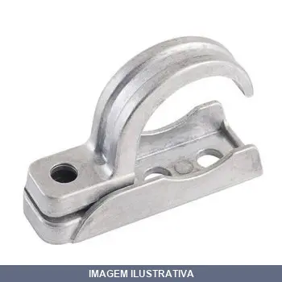
ABRAÇADEIRA ALUMINIO DAISA
BRAÇADEIRA 3/4 Pode ser utilizado na fixação de qualquer tipo de eletroduto. Serve para todos os tipos e marcas.
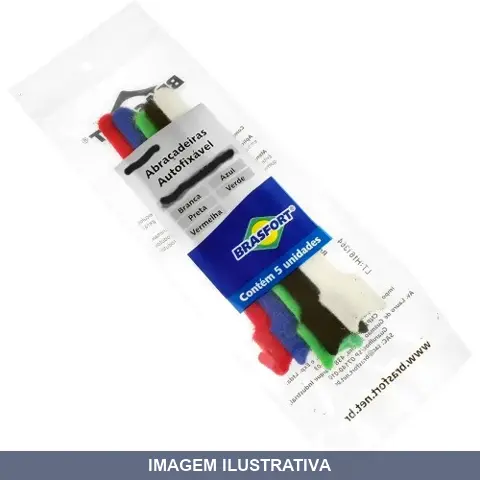
ABRAÇADEIRA AUTO FIXAVEIS COM BRASFORT
Abraçadeira autofixável colorida dimensionada em 12x150mm, com 5 peças na embalagem. Material em poliamida e nylon. Adequada para fixação de cabos e fios em aplicações domésticas, comerciais, industriais, em veículos e embalagens. Sistema autofixável permite reutilização sem agredir o elemento fixado, apropriada para aplicações temporárias e organização em geral.
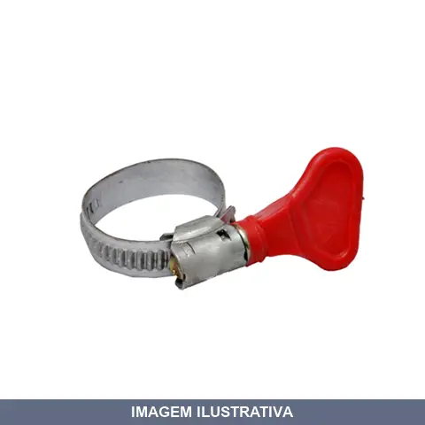
ABRAÇADEIRA BORBOLETA METALMATRIX
Indicação de Uso: Fixação e organização de cabos, tubos e condutores em instalações hidráulicas, elétricas e pneumáticas. Material e Resistência: Construída em metal, oferece durabilidade para ambientes diversos. Vantagem Prática: Mecanismo de borboleta permite aperto e soltura rápidos sem necessidade de ferramentas adicionais.
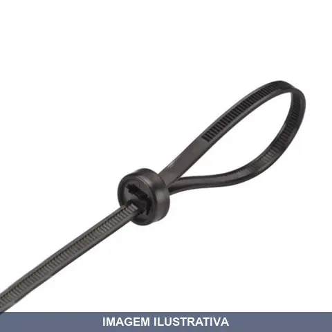
ABRAÇADEIRA CHASSIS FCH REIMOLD
Destinado para Fixação de chicotes, cabos, fios e mangueiras ao longo do chassis ( Caminhão e Ônibus )
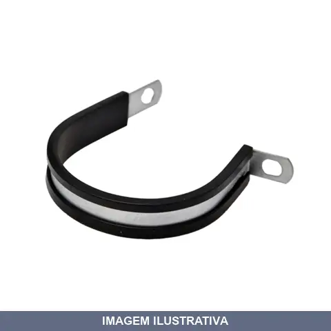
ABRAÇADEIRA COM BORRACHA METALMATRIX
Indicação de Uso: Fixação de tubos ou mangueiras em estruturas sujeitas à vibração, utilizadas em caminhões, ônibus, automóveis e instalações industriais. Material e Resistência: Fita em aço carbono com revestimento de borracha EPDM, resistência térmica de -40°C a +120°C. Vantagem Prática: Revestimento de borracha protege componentes do contato direto com a fita metálica, absorvendo vibrações; furo oblongo permite
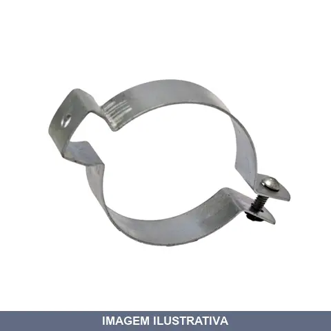
ABRAÇADEIRA D COM PARAFUSO PERFILACO
Abraçadeira tipo D com parafuso para fixação de tubos, eletrodutos e cabos em instalações elétricas e hidráulicas. Bitola: 1/2 polegada. Fabricada em aço inoxidável com resistência à oxidação. Acompanha parafuso para facilitar a instalação.
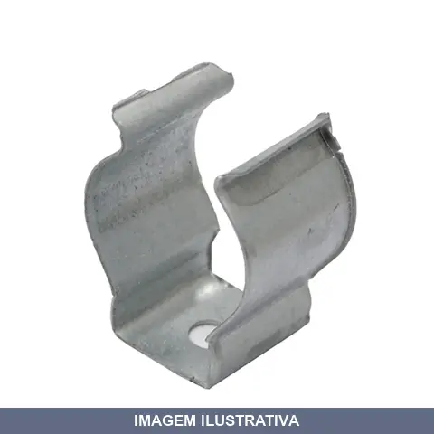
ABRAÇADEIRA D CUNHA PERFILACO
Indicação de Uso: Fixação de tubulações, eletrodutos, perfilados e semelhantes. Material e Resistência: Aço zincado. Vantagem Prática: Travamento por cunha que permite fixação rápida e fácil.
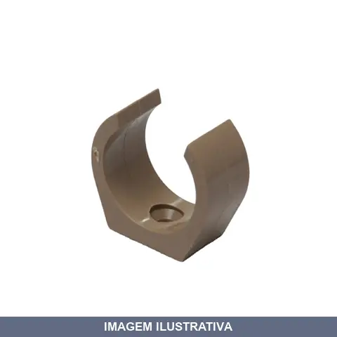
ABRAÇADEIRA ENCAIXE TUBO SOLDAVEL TIGRE
Abraçadeira encaixe para tubo soldável. Conduz água à temperatura ambiente nas instalações prediais de água fria.
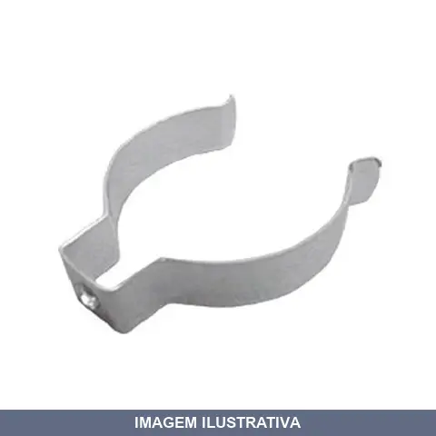
ABRAÇADEIRA FLUOR AÇO T10 T12 REDY
Abraçadeira de aço para lâmpada fluorescente 20/40W - T10/T12 Aplicação: Sustentação para lâmpadas fluorescentes Principal Componente: Aço carbono(zincado)
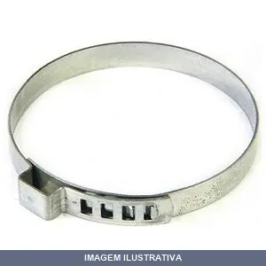
ABRAÇADEIRA JANELA Z.B METALMATRIX
Indicação de Uso: Fixação e amarração de tubulações, cabos e componentes em janelas e estruturas. Material e Resistência: Construída em metal com acabamento zincado, oferece resistência à corrosão. Vantagem Prática: Proporciona fixação segura e reutilizável para instalações hidráulicas, elétricas e de climatização.
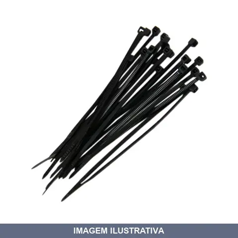
ABRAÇADEIRA LACRE K12E REIMOLD
Destinado para aplicações de travamento não violavel. Aplicado em malotes, extintores, caminhões e outros lugares onde requer fechamento Inviolavel e com identificação.

ABRAÇADEIRA LACRE K22E REIMOLD
Destinado para aplicações de travamento não violavel. Aplicado em malotes, extintores, caminhões e outros lugares onde requer fechamento Inviolavel e com identificação.
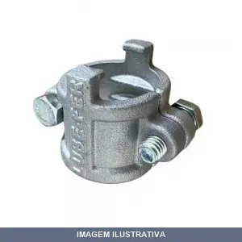
ABRAÇADEIRA MANG LAVA JATO ALUMINIO FORJADO LUBEFER
Abraçadeira para sistema de lavagem pressurizada. Fabricada em alumínio forjado, oferece resistência à corrosão e durabilidade em ambientes úmidos. Utilizada para fixação e vedação de mangueiras em equipamentos de lava jato.
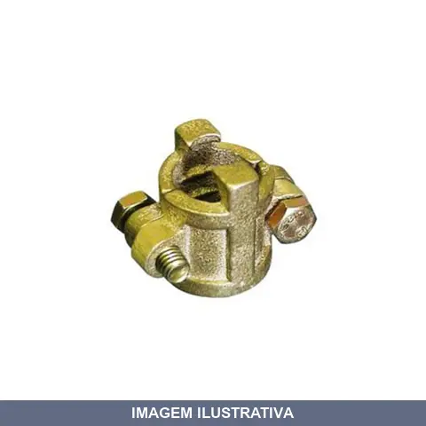
ABRAÇADEIRA MANG LAVA JATO GALVO CAT
Indicação de Uso: Fixação de mangueiras em equipamentos de alta pressão para lava jato, evitando vazamentos. Material e Resistência: Fabricada em zinco galvanizado, oferece resistência à corrosão e durabilidade em diversas condições de uso.
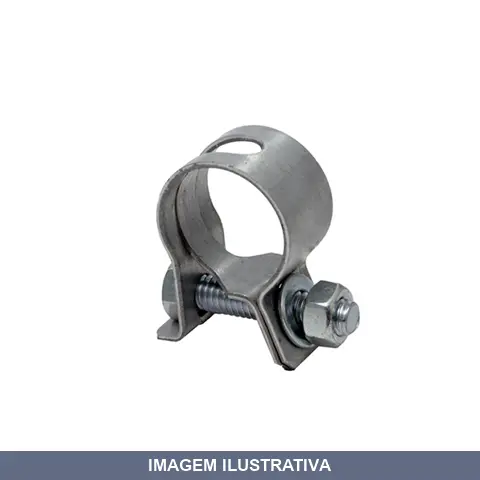
ABRAÇADEIRA MANG METALMATRIX
Indicação de Uso: Serviços pesados em tubos e mangueiras de material rígido, altas pressões. Material e Resistência: Aço carbono.
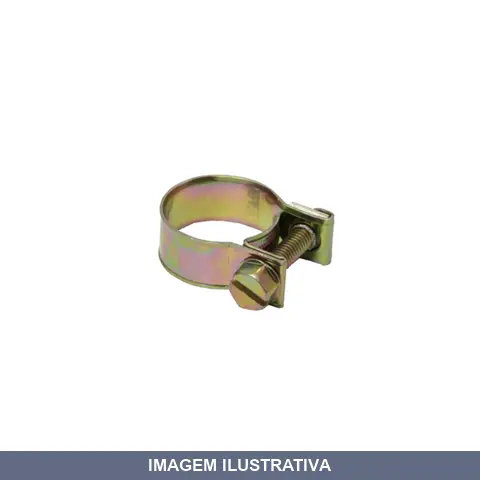
ABRAÇADEIRA NORMIX
Abraçadeira metálica para fixação e união de tubulações, mangueiras e elementos diversos em instalações hidráulicas, pneumáticas e estruturais. Material em aço com acabamento que proporciona resistência à corrosão. Facilita montagem rápida e segura em sistemas de condução de fluidos e gases.
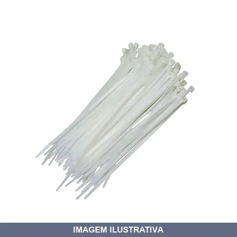
ABRAÇADEIRA NYLON BRANCA COM
Indicação de Uso: Fixação e organização de fios, cabos e diversos materiais. Material: Nylon resistente. Conteúdo: Embalagem com 100 peças.
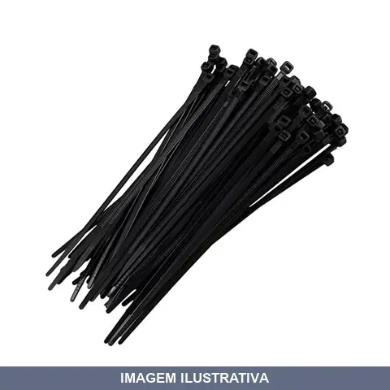
ABRAÇADEIRA NYLON PRETA COM
Abraçadeira de nylon preto para fixação e organização de cabos e fios em instalações elétricas, domésticas e industriais. Medida 2,0 x 100 mm. Fabricada em nylon resistente com trava. Embalagem com 100 peças.

ABRAÇADEIRA NYLON PRETA COM100 NOLL
Abraçadeira de nylon preta para fixação e organização de fios, cabos, mangueiras e tubos. Medida 3,6mm x 200mm. Material: Nylon 6.6 com proteção UV. Embalagem com 100 peças. Uso interno e externo.

ABRAÇADEIRA RADIAL INOX 5MMX METALMATRIX
Indicação de Uso: Fixação e compressão de mangueiras em sistemas hidráulicos, pneumáticos e de combustível. Material e Resistência: Aço inoxidável AISI 304. Vantagem Prática: Design radial que distribui pressão uniformemente, evitando danos às mangueiras e garantindo fixação segura.
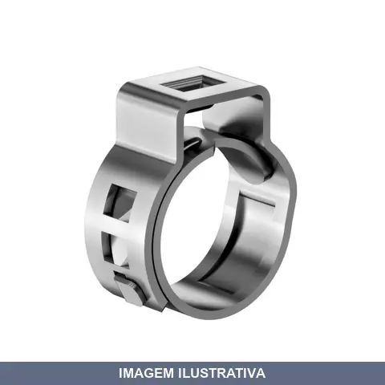
ABRAÇADEIRA RADIAL INOX 7MMX METALMATRIX
Indicação de Uso: Fixação e retenção de tubos, eixos e componentes em encaixes e acoplamentos. Ideal para aplicações que exigem pressão radial constante sem necessidade de vedação pressurizada. Material e Resistência: Aço inoxidável AISI 304, oferece circularidade regular e distribuição uniforme de forças radiais. Vantagem Prática: Aplicação rápida e simples, com retenção segura através da pressão radial constante.
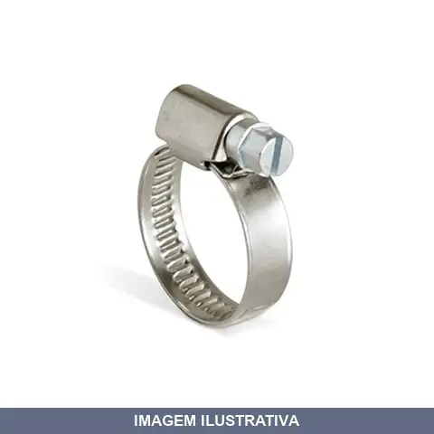
ABRAÇADEIRA RSF INOX METALMATRIX
Indicação de Uso: Fixação e organização de tubulações, cabos e mangueiras em instalações hidráulicas, pneumáticas e elétricas. Material e Resistência: Fabricada em aço inoxidável, oferece resistência à corrosão e durabilidade em ambientes úmidos ou agressivos. Vantagem Prática: Proporciona aperto seguro e reutilizável, facilitando manutenção e ajustes das tubulações.

ABRAÇADEIRA RSF METALMATRIX
Abraçadeira metálica para fixação e preensão de tubos, mangueiras e condutores. Material em metal oferece resistência mecânica para aplicações em sistemas hidráulicos, elétricos e de encanamento. Uso prático em instalações que requerem aperto seguro e durável.
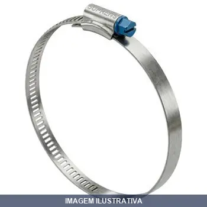
ABRAÇADEIRA RSF MICRO SUPRENS
Abraçadeira de aço para fixação e organização de cabos, tubos e componentes em instalações elétricas, hidráulicas e de utilidades. Uso em painéis, canaletas e estruturas de montagem. Proporciona fixação segura e rápida com parafuso de aperto.
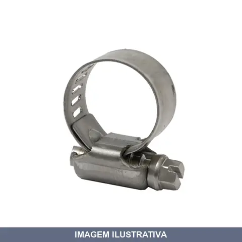
ABRAÇADEIRA RSF XO METALMATRIX
Abraçadeira metálica para fixação e preensão de tubos, mangueiras e condutores. Material em metal oferece resistência mecânica para aplicações em sistemas hidráulicos, elétricos e de encanamento. Uso prático em instalações que requerem aperto seguro e durável.
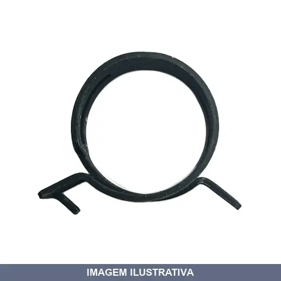
ABRAÇADEIRA TIPO MOLA DIN3021 METALMATRIX
Abraçadeira de mola conforme norma DIN 3021, fabricada em metal. Indicada para fixação e aperto de tubos, mangueiras e componentes cilíndricos em sistemas hidráulicos, pneumáticos e de fluidos em geral. Material metálico oferece resistência e durabilidade. Vantagem prática: fixação rápida sem necessidade de ferramentas adicionais.
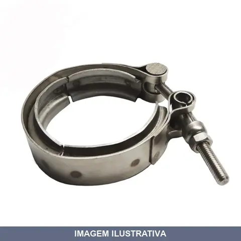
ABRAÇADEIRA TUCHO CANALETA ENG RAPIDO INOX METALMATRIX
Indicação de Uso: Fixação e organização de canaletas, tubulações e passagens de fiação em instalações elétricas, hidráulicas e prediais. Engate tipo V-band facilita montagem e desmontagem em manutenções. Material e Resistência: Aço inoxidável AISI 304, resistente à corrosão. Vantagem Prática: Sistema com parafuso e porca que requer chave para fixação e ajuste, ideal para instalações em espaços de difícil acesso.
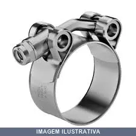
ABRAÇADEIRA TUCHO PARCIAL INOX METALMATRIX
Indicação de Uso: Aplicações industriais e veiculares em tubos e mangueiras semirrígidas que necessitam de altos índices de aperto. Material e Resistência: Fita em aço inox série 400 com parafuso em aço carbono, torque máximo de aperto 100 kgf.cm, bordas conformadas para proteção das mangueiras. Vantagem Prática: Mantém integridade do sistema sob variações de pressão.
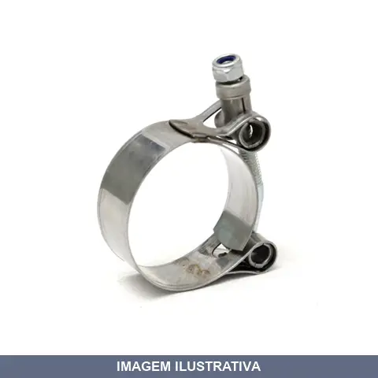
ABRAÇADEIRA TUCHO TOTAL INOX METALMATRIX
Indicação de Uso: Fixação e vedação de tubulações, mangueiras e condutores em sistemas hidráulicos, pneumáticos e de água. Material e Resistência: Construída em aço inoxidável, oferece resistência à corrosão e durabilidade em ambientes úmidos ou agressivos. Vantagem Prática: Aperto e afrouxamento requerem chave para a porca sextavada.

ABRAÇADEIRA U
Abraçadeira tipo D com parafuso para fixação de tubos, eletrodutos e cabos em instalações elétricas e hidráulicas. Bitola: 1/2 polegada. Fabricada em aço inoxidável com resistência à oxidação. Acompanha parafuso para facilitar a instalação.
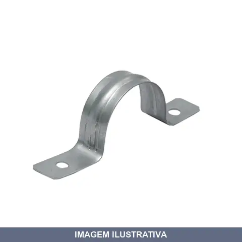
ABRAÇADEIRA U FP COMUN
Abraçadeira tipo U para fixação de eletrodutos, tubulações e conduítes. Tamanho 1.1/4 polegadas. Fabricada em aço carbono com galvanização eletrolítica. Oferece resistência mecânica para suspensão de tubos e estruturas. Instalação em madeira ou alvenaria com parafusos.
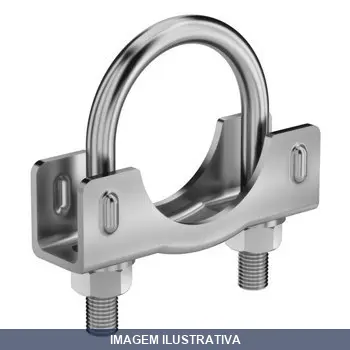
ABRAÇADEIRA U REFORCADA = METALMATRIX
Indicação de Uso: Fixação e sustentação de tubulações, conduítes e elementos cilíndricos em instalações hidráulicas, elétricas e de ar comprimido. Material e Resistência: Construção reforçada em metal para suportar cargas e vibrações. Vantagem Prática: Instalação simples com parafuso de aperto, proporcionando fixação segura e durável.
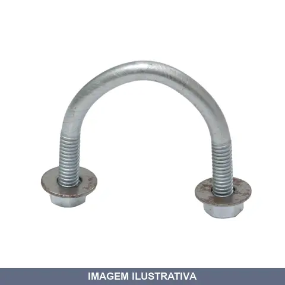
ABRAÇADEIRA U VERGALHAO+PAR (HQ / PERFILACO
Abraçadeira tipo U em vergalhão 4" x 3/8" para fixação de tubos, eletrodutos, estruturas metálicas e conduítes. Indicada para tubulações sob pressão e instalações elétricas. Acompanha 2 porcas e 2 arruelas. Acabamento galvanizado.
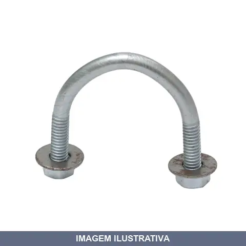
ABRAÇADEIRA U VERGALHAO+PAR PERFILACO
Indicação de Uso: Fixação de tubulação em instalações elétricas, hidráulicas e de ar comprimido. Material e Resistência: Aço carbono, com porcas e arruelas para fixação completa.
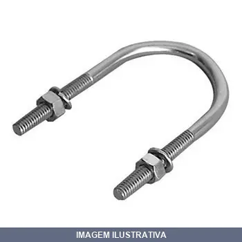
ABRAÇADEIRA U VERGALHAO+PAR X PERFILACO
Abraçadeira Tipo U em formato de vergalhão, indicada para fixação segura de tubos, eletrodutos e conduítes de médio a grande diâmetro. 1/2" x 1/4". Material: Aço de alta resistência. Acompanha 2 porcas e 2 arruelas para instalação completa. Apropriada para instalações elétricas, hidráulicas e de vapor. Cada embalagem contém 25 peças.
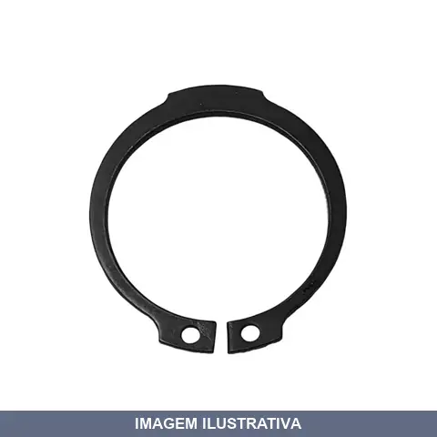
ANEL ELASTICO EXTERNO CENTER CENTERROL
Anel elástico externo para eixo de 10mm, fabricado em aço SAE 1070 com tratamento temperado e revenido. Norma DIN 471. Protegido com óleo antioxidante. Utilizado para travamento em eixos, rolamentos, guias e roletes, impedindo deslocamentos axiais e limitando o curso das peças em máquinas e equipamentos.

ANEL ELASTICO EXTERNO CENTERROL
Indicação de Uso: Anel elástico externo utilizado em eixos e componentes rotativos para retenção e fixação de peças. Aplicável em máquinas, equipamentos industriais e montagens mecânicas. Material e Resistência: Fabricado em aço, oferece resistência à fadiga e durabilidade em aplicações cíclicas. Vantagem Prática: Facilita montagem e desmontagem rápida de componentes sem necessidade de ferramentas complexas.
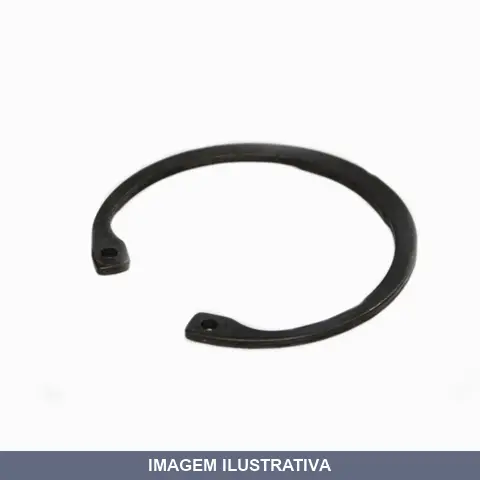
ANEL ELASTICO INTERNO CENTER CENTERROL
Indicação de Uso: Anel elástico interno utilizado em sistemas de retenção e fixação de componentes mecânicos em furos. Material e Resistência: Fabricado em aço temperado, oferece resistência e durabilidade para aplicações de encaixe e travamento. Vantagem Prática: Proporciona fixação segura e reutilizável em montagens industriais e de manutenção.

ANEL ELASTICO INTERNO CENTERROL
Anel elástico interno utilizado em aplicações de fixação e retenção em furos. Proporciona encaixe seguro e remoção facilitada em componentes mecânicos e conjuntos de máquinas.
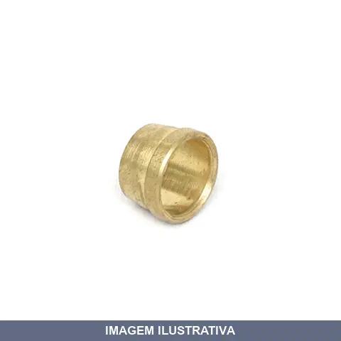
ANILHA COBRE MDM
Indicação de Uso: Anilha de cobre para aplicações em sistemas hidráulicos, pneumáticos e de encanamento que requeiram vedação ou distribuição de carga. Material e Resistência: Fabricada em cobre, oferece resistência à corrosão e boa condutibilidade térmica. Vantagem Prática: Proporciona vedação eficaz e durabilidade em conexões e montagens.

ARAME RECOZIDO = TORCIDO TRIANGULO
Indicação de Uso: Amarrações de armaduras de concreto armado, fixação de estruturas metálicas, construção civil, uso agrícola e artesanato. Material e Resistência: Aço de baixo teor de carbono recozido. Formato torcido triangular. Resistência à tração de até 40 kgf/mm² conforme ABNT NBR 5589. Vantagem Prática: Arame torcido de alta maleabilidade que já vem do jeito necessário, facilitando o manuseio e

ARRUELA ALUMINIO 1
Indicação de Uso: Distribuição de carga em fixações com parafusos e porcas em instalações elétricas, industriais e residenciais. Material e Resistência: Fabricada em alumínio com proteção contra corrosão. Vantagem Prática: Distribui uniformemente a carga do parafuso ou porca, prevenindo afrouxamento e danos à superfície.

ARRUELA ALUMINIO 1.1/2
Arruela em Zamac (liga de zinco, alumínio, magnésio e cobre). Indicação de Uso: Fixações de construção, montagens mecânicas e aplicações industriais em parafusos e pernos. Material e Resistência: Zamac com resistência à corrosão. Vantagem Prática: Distribui uniformemente a carga do parafuso e protege superfícies de contato.
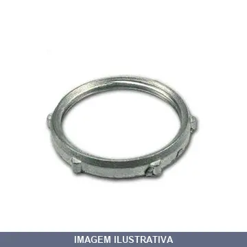
ARRUELA ALUMINIO 1.1/4
Indicação de Uso: Arruela para fixação e vedação de eletrodutos em caixas de derivação, quadros elétricos e painéis de instalações elétricas residenciais, comerciais e industriais. Material e Resistência: Fabricada em zamac (liga de zinco, alumínio, cobre e magnésio), oferecendo resistência à corrosão e durabilidade mecânica. Vantagem Prática: Distribui pressão uniformemente na fixação, evitando danos ao eletroduto e garantindo melhor vedação da conexão.

ARRUELA ALUMINIO 10 MM
Indicação de Uso: Vedação e distribuição de carga em parafusos e pernos. Material e Resistência: Alumínio. Vantagem Prática: Leve e resistente à corrosão, ideal para aplicações em ambientes úmidos ou externos.
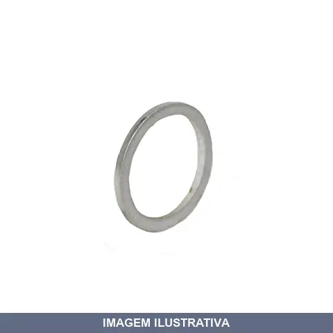
ARRUELA ALUMINIO 12 MM
Arruela fabricada em alumínio, indicada para fixações em aplicações gerais que requerem material leve e resistente à corrosão. O alumínio oferece boa condutividade térmica e durabilidade em ambientes variados. Apropriada para distribuição de pressão em parafusos e porcas, protegendo superfícies durante a fixação.

ARRUELA ALUMINIO 14 MM
Indicação de Uso: Distribuição de carga em parafusos e porcas, vedação e fixação em montagens mecânicas. Material e Resistência: Alumínio, oferece leveza e resistência à corrosão. Vantagem Prática: Reduz concentração de força, prolonga vida útil de fixadores e facilita desmontagem.

ARRUELA ALUMINIO 16 MM
Indicação de Uso: Distribuição de carga em parafusos e fixações, separação de superfícies em montagens mecânicas, acabamento de conjuntos de fixação. Material e Resistência: Alumínio, leve e resistente à corrosão. Vantagem Prática: Reduz concentração de esforço e facilita desmontagem futura.

ARRUELA ALUMINIO 18 MM
Arruela de alumínio para aplicações leves em montagens gerais. Material leve e resistente à corrosão, adequado para fixações que não exigem alta concentração de carga. Utilizada em estruturas, painéis e componentes onde o peso reduzido é vantajoso.
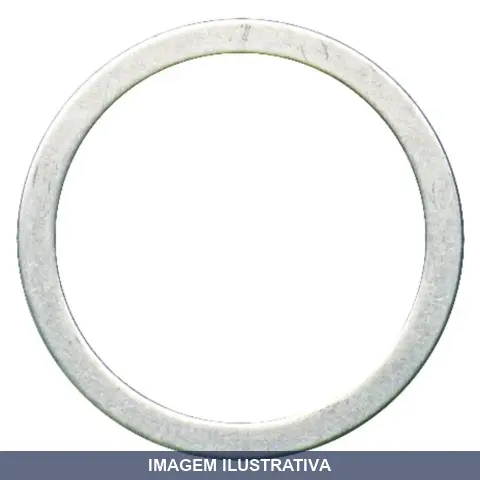
ARRUELA ALUMINIO 22 MM
Indicação de Uso: Distribuição de carga em fixações de parafusos, porcas e rebites em estruturas metálicas, máquinas e montagens gerais. Material e Resistência: Alumínio, leve e resistente à corrosão. Vantagem Prática: Reduz concentração de pressão, facilita aperto uniforme e previne oxidação.

ARRUELA ALUMINIO 3/4
Indicação de Uso: Distribuição de carga em fixações de parafusos e porcas em instalações elétricas, industriais e residenciais. Material e Resistência: Fabricada em alumínio, oferece resistência à oxidação e à corrosão. Vantagem Prática: Protege superfícies durante a instalação, evitando danos e garantindo melhor distribuição uniforme de carga.
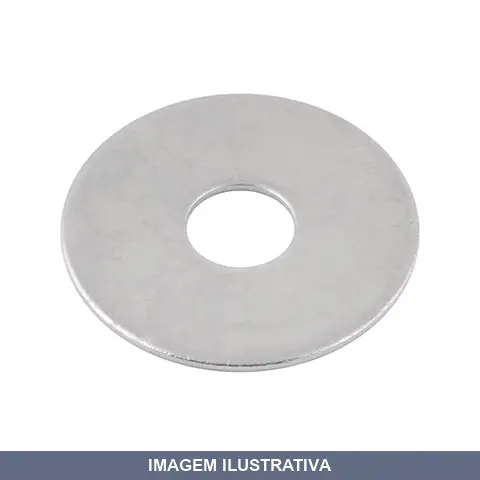
ARRUELA LISA ABA LARGA COM JF
Arruela lisa modelo aba larga para parafuso de 3/16 polegadas, embalagem com 10 peças. Material: aço carbono. Função: aumenta a área de apoio da porca ou cabeça do parafuso, distribuindo a carga e evitando afundamento em superfícies irregulares. Complemento essencial em aplicações de fixação com parafusos e porcas.
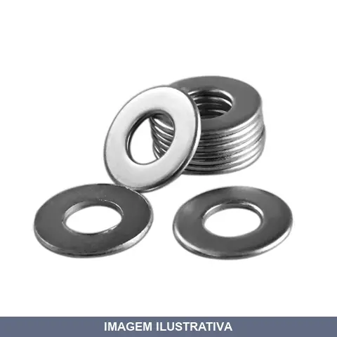
ARRUELA LISA COM JF
Indicação de Uso: Arruelas lisas para parafusos e porcas, distribuindo carga e evitando afundamento em superfícies. Material e Resistência: Construção em aço, resistente a esforços mecânicos. Vantagem Prática: Pacote com 25 peças, facilitando projetos e manutenções diversas.
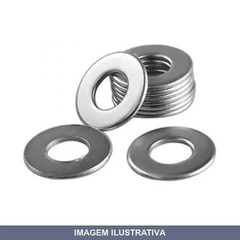
ARRUELA LISA INOX COM CISER
Indicação de Uso: Fixação e distribuição de pressão em conexões de parafusos, porcas e sistemas de fixação em geral. Material e Resistência: Aço inoxidável AISI 304, com alta resistência à corrosão em ambientes úmidos e agressivos. Vantagem Prática: Design liso distribui a carga uniformemente, evitando danos às superfícies e preenchendo folgas de contato.

ARRUELA PRESSAO COM
Indicação de Uso: Fixação e vedação em aplicações de pressão, comumente utilizada em sistemas hidráulicos, pneumáticos e montagens que exigem retenção sob carga. Material e Resistência: Fabricada em metal, adequada para suportar pressão e vibração. Vantagem Prática: Distribui a carga de aperto de forma uniforme, evitando danos em superfícies e garantindo fixação segura em montagens críticas.
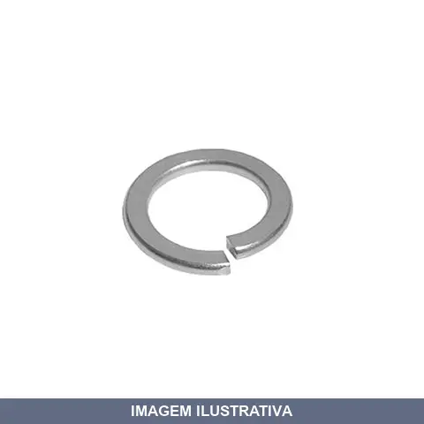
ARRUELA PRESSAO INOX COM CISER
Indicação de Uso: Componente de fixação utilizado com parafusos e porcas para evitar afrouxamento em aplicações com vibrações, em máquinas, estruturas e ambientes industriais, químicos e hidráulicos. Material e Resistência: Aço inoxidável 304, com resistência à corrosão em ambientes úmidos e industriais. Design helicoidal com efeito de mola para pressão constante. Vantagem Prática: Distribuição uniforme de carga no aperto, prevenção de afrouxamentos
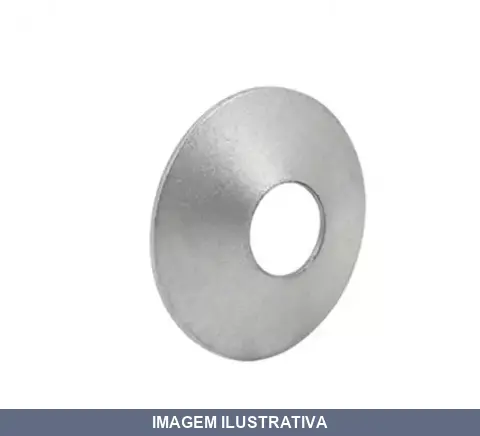
ARRUELA VEDACAO CHAPA COM JF
Indicação de Uso: Vedação e fixação em aplicações hidráulicas, pneumáticas e de encanamento. Material e Resistência: Chapa metálica com propriedades de vedação. Vantagem Prática: Distribui pressão uniformemente e previne vazamentos em conexões.
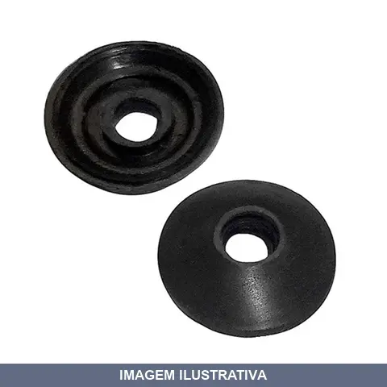
ARRUELA VEDACAO PVC CONCAVA COM JF
Indicação de Uso: Vedação de parafusos, hastes e ganchos em fixações de telhas e estruturas metálicas, evitando infiltração de água. Material e Resistência: PVC côncavo resistente à água, umidade e intempéries, com diâmetro externo de aproximadamente 22 mm. Vantagem Prática: Distribui pressão uniformemente, acompanhada de arruela PVC lisa ou chupeta para vedação completa.
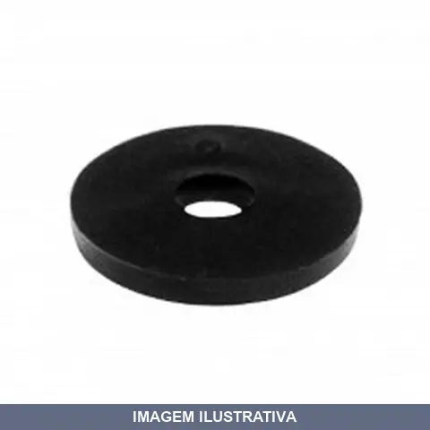
ARRUELA VEDACAO PVC RETA COM JF
Utilizadas exclusivamente nos fixadores para telha e hastes para estruturas metálicas, evitando assim a infiltração de água pelo corpo do fixador.

BARRA ROSCADA INOX CISER
Barra roscada em aço inoxidável 304 com rosca métrica inteira. Bitola de 16mm e comprimento de 1 metro, permitindo cortes conforme necessário. Padrão MA com passo de 2,0mm. Conforme norma ISO 3506-1, classe de resistência A2-70. Indicada para fixação em instalações mecânicas, elétricas e hidráulicas, bem como em ambientes que exigem resistência à corrosão.
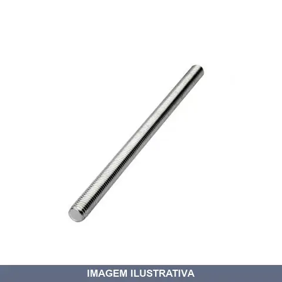
BARRA ROSCADA INOX UNC CISER
Indicação de Uso: Montagem de estruturas, fixações mecânicas, instalações elétricas, dutos de refrigeração e hidráulicas. Material e Resistência: Aço inoxidável AISI 304 conforme norma ASTM F593, com rosca UNC inteira contínua. Vantagem Prática: Rosca contínua facilita montagem e fixação de componentes, resistência à corrosão em ambientes agressivos.

BARRA ROSCADA POLIDA BSW CISER
Indicação de Uso: Barra roscada para fixação, ancoragem e montagem estrutural em aplicações mecânicas e de construção civil. / Material e Resistência: Aço carbono com acabamento polido, rosca integral tipo BSW. / Vantagem Prática: Oferece resistência à corrosão e facilita aperto e desaperto de porcas e arruelas em projetos que demandam barras roscadas de tamanho estendido.

BARRA ROSCADA POLIDA MA CISER
Indicação de Uso: Fixação, ancoragem e estruturação em aplicações de construção, máquinas e estruturas metálicas. Material e Resistência: Aço polido com rosca contínua, oferecendo resistência mecânica adequada para usos estruturais. Vantagem Prática: Superfície polida facilita a inserção e deslizamento em componentes, reduzindo atrito durante a montagem.

BARRA ROSCADA POLIDA UNC CISER
Barra roscada com rosca inteira, aço carbono, acabamento polido, 3/16" de diâmetro, 1 metro de comprimento. Indicação de Uso: Montagem de estruturas para instalações elétricas industriais, dutos de refrigeração, rebaixos de tetos falsos em instalações comerciais e uso mecânico em geral. Vantagem Prática: Pode ser cortada em comprimentos conforme necessidade, substituindo parafusos não encontrados no mercado.

BARRA ROSCADA ZINCADA MA CISER
Indicação de Uso: Fixação, ancoragem e montagem em estruturas metálicas, máquinas e construções. Material e Resistência: Aço zincado, com revestimento que oferece proteção contra corrosão. Vantagem Prática: Roscas padronizadas permitem uso com porcas e arruelas, facilitando montagens e desmontagens repetidas.

BARRA ROSCADA ZINCADA UNC CISER
Barra roscada em aço carbono com acabamento zincado branco. Bitola 1/2 polegada, rosca UNC inteira, comprimento de 1 metro. Indicada para uso mecânico, montagem de estruturas em instalações elétricas industriais, dutos de refrigeração e tetos falsos. Pode ser cortada em diferentes comprimentos conforme necessário.
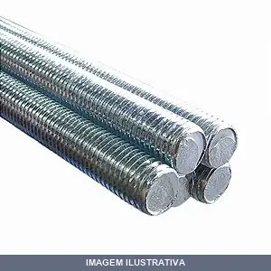
BARRA ROSCADA ZINCADA/POLIDA UNC JOMARCA
Barra roscada em aço zincado com acabamento polido. Indicada para fixação, ancoragem e montagem em estruturas metálicas e aplicações que exigem resistência à corrosão. O revestimento zincado oferece proteção contra oxidação em ambientes internos e externos.
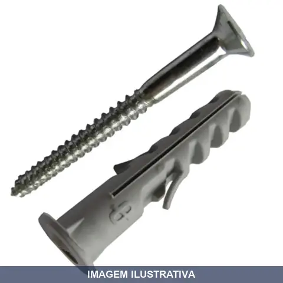
BUCHA COM ANEL +PARAFUSO MADEIRA SFOR
PARFUSO MAD. PHS 3,2 X 30 + BUCHA NYLON COM ABA 5 MM - 10 PEÇAS
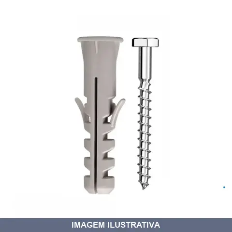
BUCHA COM ANEL +PARAFUSO SEXTAVADO SFOR
PARAFUSO SEXT SOB. 3/16 X 40 + BUCHA NYLON COM ABA 8 MM - 5 PEÇAS
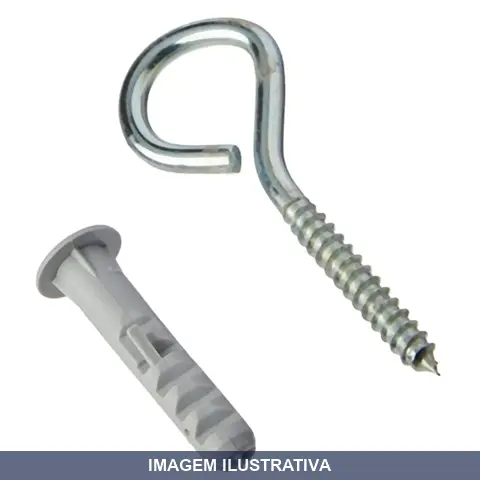
BUCHA COM ANEL +PITAO SFOR
Conjunto de bucha com anel e pitão para fixação em alvenaria. Material: nylon com anel de polietileno. O anel evita que a bucha rode dentro do furo, proporcionando fixação segura em paredes de tijolo, cimento e concreto. Aplicação: indicado para pendurar objetos em superfícies de alvenaria.

BUCHA COM ANEL 0010P PARA SFOR
Bucha de nylon com anel, sem parafuso. Indicada para fixação em todos os tipos de materiais maciços. Produzida em poliamida 100% nylon. Possui aletas e travas anti-giro, evitando que a bucha rode dentro do furo. Utiliza parafusos tipo madeira, auto-atarraxante e sextavado.
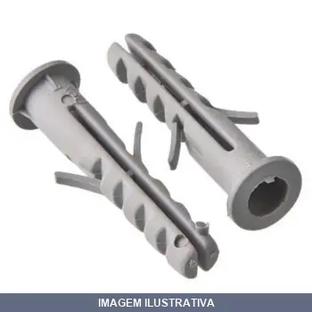
BUCHA COM ANEL IVPLAST
Indicação de Uso: Fixação em paredes compactas de tijolo, cimento e concreto. Ideal para armários, prateleiras, quadros e acessórios de banheiro. Material e Resistência: Produzido em polietileno de alta densidade. Apresenta aletas que não permitem que a bucha gire dentro do furo. Anel impede que a bucha penetre no furo. Vantagem Prática: Utilizado com parafuso de rosca madeira ou auto atarraxante.

BUCHA COM ANEL PARA SFOR
BUCHA NYLON COM ABA 8 MM - COM 10 PEÇAS BUCHA DE PLASTICO COM ANEL - 8MM COM 10 UNIDADES

BUCHA COM ANEL SFOR
Indicação de Uso: Fixação em materiais maciços como alvenaria, concreto e tijolo. Utiliza parafusos tipo madeira, auto-atarraxante e sextavado. Material e Resistência: Poliamida 100% nylon com anel/aba anti-giro, evita rotação dentro do furo. Vantagem Prática: Travas e aletas integradas garantem fixação segura e estável em diferentes tipos de paredes.

BUCHA COM ANEL SFOR/FLORINI
BUCHA NYLON COM ABA 5 MM 20 PEÇAS BUCHA DE PLASTICO COM ANEL - 5MM COM 20 UNIDADES

BUCHA COM ANEL SFORPLAST
BUCHA PLÁSTICA C/ ABA 5 MM - 200 PC Descrição Bucha de fixação tradicional para bases maciças. Produzida com composto polimérico reciclado. Pode-se utilizar parafuso tipo madeira ou auto-atarraxante, entre os diâmetros 2,8 a 3,8 mm, com comprimento de 25 mm mais a espessura do objeto a ser fixado. Especificações BUCHA PLÁSTICA C/ ABA -------------------------------------- » Diâmetro da Bucha: 5 mm » Comprimento da Bucha: 25 mm » Diâmetro da broca a ser utilizada: 5 mm » Quantidade: 200 pçs
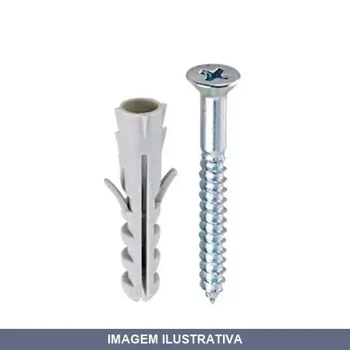
BUCHA CONV +PARAFUSO MADEIRA
BUCHA NYLON 5MM COM PARAFUSO PHILLIPS CABEÇA CHATA COM 10 UNIDADES DESCRIÇÃO DA NF:PAR MAD PH CCH C/BUC 05MM CT COD: 3221
BUCHA CONV +PARAFUSO SEXTAVADO
PARAF. SEXT. SOB. 3/16 X 40 + BUCHA NYLON 8 MM - 5 PEÇAS

BUCHA CONV +PARAFUSO SEXTAVADO SFOR
PARAF. SEXT. SOB. 3/16 X 40 + BUCHA NYLON 8 MM - 20 PEÇAS
BUCHA CONV IVPLAST
Bucha convencional para fixação em alvenaria e concreto. Fabricada em plástico, oferece ancoragem segura para parafusos e pernos. Indicada para instalação de quadros, prateleiras, luminárias e demais objetos em paredes internas e externas.
BUCHA CONV SD BRANCA SFOR
Bucha de convencional branca para instalações elétricas em alvenaria e concreto. Indicada para fixação de pinos e parafusos em paredes. Material em plástico resistente.

BUCHA CONV SFOR
Indicação de Uso: Bucha plástica de fixação para parede, usada com parafuso para fixar objetos em alvenaria. Material e Resistência: Construída em material resistente para garantir boa fixação. Vantagem Prática: Permite fixação segura de diversos tipos de objetos em paredes e superfícies de alvenaria.

BUCHA CONV SFORPLAST
BUCHA PLÁSTICA 10 MM - 50 PC Descrição Bucha de fixação tradicional para bases maciças. Produzida com composto polimérico reciclado. Pode-se utilizar parafuso tipo madeira, auto-atarraxante ou sextavado entre os diâmetros 6,0 a 8,0 mm, com comprimento de 50 mm mais a espessura do objeto a ser fixado. Especificações BUCHA PLÁSTICA --------------------------------- » Diâmetro da Bucha: 10 mm » Comprimento da Bucha: 50 mm » Diâmetro da broca a ser utilizada: 10 mm » Quantidade: 50 pçs
BUCHA DRYFIX SFORPLAST
Indicação de Uso: Bucha de fixação para instalações em alvenaria, concreto e materiais similares. Material e Resistência: Fabricada em plástico, oferece resistência adequada para fixações leves a médias. Vantagem Prática: Facilita a ancoragem de parafusos e pernos em superfícies de alvenaria, dispensando o uso de bucha metálica em aplicações convencionais.
BUCHA FIXACAO PARA MOVEL AMERICANA SPF
Indicação de Uso: Utilizado na indústria moveleira para montagem e fixação de diversos tipos de produtos. Serve para ser encaixado em paredes, muros e estruturas, dando suporte a parafusos para encaixe simples de peças em móveis. Material e Resistência: Fabricada em Zamak, oferece durabilidade e segurança na fixação. Proporciona estabilidade e suporte, resistente a impactos e vibrações. Vantagem Prática: Fácil instalação e remoção, versátil para fixação de armários,
BUCHA PARA GESSO +PARAFUSO SFOR
Indicação de Uso: Fixação em placas de gesso, drywall, forro e teto de gesso. Indicada para instalação de armários, corrimão, móveis planejados, prateleiras e suporte para TV e micro-ondas. Material e Resistência: Aço e poliestireno. Suporta até 20 kgf em drywall e até 55 kgf em blocos de concreto. Vantagem Prática: Fixação segura, rápida e fácil. Auto ajustável para diversas espessuras de
BUCHA PARA GESSO SFOR
BUCHA FLY 2 - 50 PC Descrição Bucha de fixação indicada para todos os tipos de materiais ocos: placas de gesso, drywall, forro e teto de gesso. Produzida em PEAD de alta qualidade, pode-se utilizar parafuso tipo madeira ou chipboard entre os diâmetros 4,2 a 4,5 mm, com comprimento de 55 mm. Especificações BUCHA FLY 2 ------------------------------------------------ » Materia prima: PEAD » Diâmetro do furo: 10 mm » Espessura do Material base: 4-16 mm » Diâmetro do parafuso utilizado: 4,2 - 4,5 mm
BUCHA PARA OCO +PARAFUSO SEXTAVADO SFOR
Parafuso sextavado com bucha para fixação em materiais ocos e maciços. Bucha de nylon nº 12 com aletas anti-giro. Parafuso de aço carbono com rosca soberba. Indicado para fixações robustas em concreto, alvenaria, blocos e tijolos. Embalagem com 2 peças.
BUCHA PARA OCO +PARAFUSO SFOR
Bucha para oco com parafuso vendidos em conjunto, peças separadas. Indicação de Uso: fixação em superfícies ocas como drywall, gesso acartonado e materiais similares. Material e Resistência: bucha em nylon com parafuso de aço. Vantagem Prática: instalação rápida e segura em estruturas ocas sem necessidade de ferragens adicionais.

BUCHA PARA OCO 06 0010
Indicação de Uso: Bucha plástica para fixação em paredes ocas, utilizada junto com parafusos para fixar objetos e acessórios. Material e Resistência: Fabricada em material plástico resistente. Vantagem Prática: Proporciona fixação segura em superfícies ocas.

BUCHA PARA OCO 06 200
BUCHA MU 6 - 200 PC Descrição Bucha de fixação Multi-Uso para bases maciças ou ocas. Produzida com PEAD virgem. Pode-se utilizar parafuso tipo madeira ou chipboard entre os diâmetros 3,5 a 4,0 mm, com comprimento de 36 mm mais a espessura do objeto a ser fixado. Contração com efeito nó em bases ocas. Especificações BUCHA MU 6 --------------------------------------------- » Diâmetro da Bucha: 6 mm » Comprimento: 36 mm » Diâmetro da broca a ser utilizada: 6 mm » Carga Recomendada oco: 17 Kgf » Car

BUCHA PARA OCO 06 500
Indicação de Uso: Bucha de fixação para elementos em ocosistemas de estruturas, móveis e construção. Material e Resistência: Fabricada em plástico, oferece resistência à corrosão e umidade. Vantagem Prática: Facilita a instalação de parafusos e pernos em furos, distribuindo a carga e evitando danos ao material base.
BUCHA PARA OCO 08 006
Indicação de Uso: Bucha plástica para fixação em paredes ocas (drywall/divisórias), utilizada com parafuso para prender objetos, sem função de vedação hidráulica ou conexão de tubulações. / Vantagem Prática: Proporciona fixação segura na parede, facilitando montagem e desmontagem.

BUCHA PARA OCO 08 100
BUCHA MU 8 - 100 PC Descrição Bucha de fixação Multi-Uso para bases maciças ou ocas. Produzida com PEAD virgem. Pode-se utilizar parafuso tipo madeira ou chipboard entre os diâmetros 4,5 a 5,5 mm, com comprimento de 50 mm mais a espessura do objeto a ser fixado. Contração com efeito nó em bases ocas. Especificações BUCHA MU 8 --------------------------------------------- » Diâmetro da Bucha: 8 mm » Comprimento: 50 mm » Diâmetro da broca a ser utilizada: 8 mm » Carga Recomendada oco: 25 Kgf » Car
BUCHA PARA OCO 08 500
Indicação de Uso: Buchas para instalação em superfícies ocas como drywall, gesso acartonado e materiais similares. Material e Resistência: Fabricada em plástico, oferece fixação segura em estruturas vazadas. Vantagem Prática: Ideal para fixar quadros, prateleiras e acessórios em paredes ocas.

BUCHA PARA OCO 10 004
Bucha para oco destinada a fixações e conexões em estruturas ocas. Proporciona ancoragem segura em materiais ocos como drywall, blocos e placas. Facilita a instalação de prateleiras, espelhos e acessórios em superfícies ocas.

BUCHA PARA OCO 10 050
BUCHA MU 10 - 50 PC Descrição Bucha de fixação Multi-Uso para bases maciças ou ocas. Produzida com PEAD virgem. Pode-se utilizar parafuso tipo madeira ou chipboard entre os diâmetros 6,0 a 8,0 mm, com comprimento de 60 mm mais a espessura do objeto a ser fixado. Contração com efeito nó em bases ocas. Especificações BUCHA MU 10 --------------------------------------------- » Diâmetro da Bucha: 10 mm » Comprimento: 60 mm » Diâmetro da broca a ser utilizada: 10 mm » Carga Recomendada oco: 30 Kgf »

BUCHA PARA OCO 10 250
Indicação de Uso: Buchas para fixação em estruturas ocas, como drywall, placas de gesso e materiais similares. Material e Resistência: Plástico resistente, adequado para aplicações em ambientes internos. Vantagem Prática: Fornece ancoragem segura em superfícies ocas sem necessidade de furos adicionais.

BUCHA PARA OCO 12 006
Bucha para oco, utilizada em aplicações de encaixe e fixação em furos. Indicada para montagem e instalação em estruturas e componentes diversos. Componente prático para trabalhos de construção, manutenção e montagem industrial.

BUCHA PARA OCO 12 025
BUCHA MU 12 - 25 PC Descrição Bucha de fixação Multi-Uso para bases maciças ou ocas. Produzida com PEAD virgem. Pode-se utilizar parafuso tipo madeira ou chipboard entre os diâmetros 8,0 a 10,0 mm, com comprimento de 60 mm mais a espessura do objeto a ser fixado. Contração com efeito nó em bases ocas. Especificações BUCHA MU 12 --------------------------------------------- » Diâmetro da Bucha: 12 mm » Comprimento: 69 mm » Diâmetro da broca a ser utilizada: 12 mm » Carga Recomendada oco: 40 Kgf »
BUCHA PARA PRISIONEIRO X15 EXTERNO , INTERNO , 8
Bucha para prisioneiro, componente de fixação utilizado em aplicações de encaixe e acoplamento de peças. Indicada para montagens em equipamentos, máquinas e estruturas que requeiram união segura de elementos. Proporciona vedação e estabilidade na fixação de componentes acoplados.

BUCHA PARA PRISIONEIRO X20 EXTERNO , INTERNO ,25
Bucha cilíndrica para prisioneiro, utilizada em fixação e alinhamento de componentes mecânicos. Indicada para aplicações que requerem encaixe de precisão entre peças. Facilita montagem e desmontagem de estruturas modulares e equipamentos industriais.

BUCHA PARA PRISIONEIRO X20 MOTO EXTERNO , 125
Bucha cilíndrica para montagem em prisioneiros, aplicação em motores e equipamentos com eixo externo. Componente de vedação e fixação em sistemas de transmissão e movimentação mecânica.
BUCHA PLASTICA X ICAPER
Bucha de plástico para instalações hidráulicas e de distribuição. Material plástico resistente ao contato com água e pressão. Facilita conexões e transições de tubulações em sistemas de encanamento.
BUCHA SX COM FISCHER
Indicação de Uso: Buchas de expansão para fixação em alvenaria, concreto e materiais similares. Material e Resistência: Plástico nylon com estrutura de expansão. Vantagem Prática: Proporciona ancoragem segura para parafusos e pernos em paredes e estruturas. Fornecido em quantidade de 1000 peças para uso profissional e industrial.
BUCHA TAB COM PARAFUSO MAQ COM SFORBOLT
Indicação de Uso: Fixação de elementos em superfícies ocas, placas de gesso, drywall e bases similares. Material e Resistência: Bucha em polietileno com parafuso em aço de baixo carbono. Vantagem Prática: Instalação rápida e segura com distribuição uniforme de carga.
BUCHA TAB SEM PARAFUSO COM SFORBOLT
Indicação de Uso: Fixação e ancoragem em alvenaria, concreto e materiais similares. Indicada para instalação de peças, equipamentos e acessórios em paredes e superfícies de concreto. Material e Resistência: Construída em material resistente adequado para aplicações em alvenaria. Vantagem Prática: Instalação sem necessidade de parafuso adicional, proporcionando praticidade no processo de fixação.
CHUMBADOR CBA PARAFUSO ANCORA
CHUMBADOR CBA 1/4 X 2 COM PARAFUSO 5.6 Chumbador de expansão controlada por torque, composto por parafuso, arruela, jaqueta e cone. Prolongador incluso conforme comprimento. PRINCIPAIS APLICAÇÕES - Instalação elétrica, hidráulica, ar-condicionado incêndio e gás - Instalação de estruturas e peças metálicas CARACTERISTICAS E VANTAGENS Cone com desenho exclusivo, possui guias que garantem um perfeito encaixe na jaqueta impedindo o giro em falso**** - Instalação simples - Sem limitação de profund
CHUMBADOR CBA PRISIONEIRO ANCORA
CHUMBADOR CBA 1/4 X 65 COM PRISIOEIRO Chumbador de expansão controlada por torque, composto por prisioneiro, arruela, jaqueta e cone. Prolongador incluso conforme comprimento. Principais Aplicações - Instalação Elétrica, hidráulica, ar-condicionado incêndio e gás - Instalação de estruturas e peças metálicas
CHUMBADOR CBN PARAFUSO CAPA NYLON ANCORA
CHUMBADOR DE NYLON 1/4 X 3 COM PARAFUSO Chumbador de acomodação. Composto por parafuso, arruela, jaqueta de poliamida (nylon) e cone. PRINCIPAIS APLICAÇÕES - Equipamentos (ar condicionado, antenas, tvs, suportes) - Peças metálicas leves (corrimão, apoios) - Móveis (estantes, prateleiras, gabinetes) CARACTERISTICAS E VANTAGENS -Produto inovador para ancoragem em todo o tipo de material base - Fixações em materiais ocos, maciços e maciços porosos - Melhor ancoragem mecânica para bases ocas - Possu
CHUMBADOR PBA ANCORA
Chumbador de expansão controlada por torque para ancoragem mecânica em concreto. Composto por parafuso expansor, presilha, porca e arruela. Indicação de Uso: Fixação de máquinas, equipamentos, elevadores, plataformas, estruturas metálicas, sistemas de armazenagem e guarda-corpos. Material e Resistência: Aço carbono com capacidade de carga conforme norma técnica. Vantagem Prática: Desempenho superior em ancoragem com distribuição uniforme de carga e facilidade de instalação.
CHUMBADOR QUIMICO BI COMPONENTE ANCORA
CHUMBADOR QUIMICO BI COMP INJECAO 380ML AQI O Chumbador Químico AQI380PRO, desenvolvido pela Âncora, é um sistema de ancoragem adesiva por injeção, de cura rápida, bicomponente à base de metacrilato para altas cargas em concreto. Permite menores espaçamentos entre fixações e reduzidas distâncias da borda, possibilitando recuperação e reforço estrutural em vigas e pilares de concreto. Sua aplicação é limpa, ágil e simples com aplicador manual e bico misturador APL380.
CONJUNTO TELHA COM VEDACAO CISER
CJ PA AC RS 5/16 (7,4MM)110 PS ZB CONJ. PARAFUSO TELHA ROSCA SOBERBA PS Código 206 226 01 Dimensão: Padrão Ciser Rosca: Soberba para Madeira Material: Aço Baixo Carbono Utilizado exclusivamente na fixação de telhas, geralmente de fibro-cimento em caibros de madeira. Já vem acompanhado das arruelas de vedação de ferro e PVC.
CONTRAPINO COM UND CENTERROL
Contrapino para fixação e travamento de componentes em máquinas, equipamentos e estruturas. Fabricado em aço, oferece resistência à corrosão e durabilidade. Facilita montagem e desmontagem rápida de peças. Conjunto com 10 unidades.
FITA PERFUR ANCORA 10M
Fita perfurada em rolo de 10 metros, indicada para fixação, suporte e ancoragem de tubulações, cabos e estruturas em instalações hidráulicas, elétricas e de construção. Apresenta perfurações que permitem passagem de parafusos e porcas para distribuição de cargas. Versátil para uso em montagens diversas em ambientes residenciais e comerciais.
FITA PERFUR ANCORA 30M
Indicação de Uso: Fixação, ancoragem e suporte de estruturas, equipamentos e cargas em obras, construção civil e instalações em geral. Material e Resistência: Fita de material resistente, apropriada para ancoragem segura de elementos. Vantagem Prática: Formato em rolo facilita o armazenamento e permite uso contínuo em projetos de diferentes tamanhos.
FIXA CABO COM BRANCO A.SANTOS
Indicação de Uso: Fixação de fios e cabos em paredes, tetos e superfícies de madeira. Material e Resistência: Plástico resistente com prego de aço temperado, garante fixação firme e durável. Vantagem Prática: Proporciona acabamento limpo e organizado na passagem de cabos elétricos.

FIXA FIO COAXIAL BRANCO COM PREGO DE AÇO SFO
Indicação de Uso: Fixação de cabos coaxiais em rodapés e paredes. Material e Resistência: Suporte em polietileno branco com prego de aço baixo carbono. Vantagem Prática: Instalação com martelo para fixação segura e discreta de cabos coaxiais.
FIXADOR DE COR ESTREITO FERRAR
Indicação de Uso: Parafuso em U galvanizado, indicado para fixação de tubos e canos em estruturas metálicas. Aplicável em instalações que requerem fixação firme de peças cilíndricas. Material e Resistência: Acabamento galvanizado, que auxilia na proteção contra corrosão. Vantagem Prática: Acompanha porcas, facilitando o ajuste e o posicionamento durante a instalação.
FIXADOR DE COR LARGA FERRAR
Indicação de Uso: Fixação e travamento de peças em trabalhos de marcenaria, carpintaria, serralheria e montagem industrial. Material e Resistência: Construído em metal resistente, adequado para aplicações que demandam fixação segura. Vantagem Prática: Design de abertura larga facilita o posicionamento rápido de peças de diferentes espessuras.
GANCHO TELHA CISER
GA TE J 40 AC UNC 1/4 X 110 PS 50,8 ZB GANCHO TELHA J 40PS UNC Código 273 176 01
GRAMPO CERCA TRIANGULO
Indicação de Uso: Fixação de arames farpados, lisos e telas em mourões de madeira para construção de cercas rurais. Material e Resistência: Fabricado em aço com galvanização a fogo, proporcionando resistência à corrosão e ação do tempo. Vantagem Prática: Proporciona ótima aderência à madeira e maior fixação ao mourão, facilitando a construção da cerca.
GRAMPO JOANINHA FERRAR
Grampo tipo joaninha para ferragem e fixação de estruturas. Material metálico resistente, adequado para aplicações em construção civil e montagem geral. Proporciona fixação segura e rápida em trabalhos que demandam grampeamento em madeira e materiais similares.
GRAMPO MIGUELAO LIMA COM PECAS LIMA
Indicação de Uso: Fixação e união de materiais em trabalhos de construção, marcenaria e montagem. Material e Resistência: Fabricado em metal, próprio para suportar tensão em aplicações que exigem grampeamento. Vantagem Prática: Acompanha quantidade suficiente para múltiplos projetos, reduzindo necessidade de compras frequentes.
GRAMPO MIGUELAO TIPO GARRA COM SFOR
GRAMPO TIPO GARRA SFOR COAX 7 MM (PACOTE COM 100 PEÇAS)
GRAMPO PARA GRAMPEADOR CX/ GRAMSERV 06MM 3500 [003262]
Grampo destinado a grampeadores manuais e pneumáticos. Fabricado em aço para fixação de materiais como papel, papelão, tecidos e madeira em aplicações gerais. Embalagem com 3500 unidades para uso profissional e residencial.
GRAMPO PARA GRAMPEADOR CX/ GRAMSERV 08MM 2500 [003263]
GRAMPO PARA GRAMPEADOR DE TAPECEIRO GRAMSERV 106/8MM 260G

GRAMPO PARA GRAMPEADOR CX/ NOLL
Grampo para grampeador de 06mm. Indicação de Uso: fixação de tecidos, forros e acabamentos em madeira com grampeador pneumático ou manual industrial. Material e Resistência: aço temperado. Vantagem Prática: embalagem com 2500 unidades, quantidade adequada para uso prolongado em ambientes comerciais e residenciais.

GRAMPO PARA GRAMPEADOR CX/ VONDER
GRAMPO 4MM CAIXA C/ 1000 VONDER Indicado para grampeador manual VONDER código 28.98.100.000 Possui acabamento zincado, proporcionando maior resistência a oxidação/corrosão
GRAMPO PARA GRAMPEADOR CX/ WORKER
GRAMPO GRAMPEADOR PNEUMATICO 10MM 1000PEÇAS - WORKER
GRAMPO PARA GRAMPEADOR MANUAL , CX/C1000 NOLL
Indicação de Uso: Para grampear madeiras, tecidos, linhas, fios e artigos de decoração e tapeçaria em geral. Material e Resistência: Feito em material metálico resistente, indicado para utilização em grampeador manual. Vantagem Prática: Embalagem com 1.000 peças de fácil aplicação.
GRAMPO PARA GRAMPEADOR PNEUMATICO CX/ VONDER 06MM 2500
Grampo tipo reto para grampeador pneumático VONDER, fabricado em aço carbono com acabamento zincado que oferece maior resistência à oxidação e corrosão. Indicado para uso em grampeadores pneumáticos da marca. Apresenta medidas padronizadas de arame.

GRAMPO PARA GRAMPEADOR PNEUMATICO CX/ VONDER 08MM 2500
Grampo tipo reto para grampeador pneumático VONDER, fabricado em aço carbono com acabamento zincado que oferece maior resistência à oxidação e corrosão. Indicado para uso em grampeadores pneumáticos da marca. Apresenta medidas padronizadas de arame.
GRAMPO PARA GRAMPEADOR PNEUMATICO CX/ VONDER 10MM 2500
Grampo tipo reto para grampeador pneumático VONDER, fabricado em aço carbono com acabamento zincado que oferece maior resistência à oxidação e corrosão. Indicado para uso em grampeadores pneumáticos da marca. Apresenta medidas padronizadas de arame.
GRAMPO PARA GRAMPEADOR TR45 STANLEY
GRAMPOS DE USO GERAL - 5/16" (1000) TRA205T Para trabalhos de grampeio leves em casa e em manufaturas e grampeio pesados Pacotes com código de cor que facilitam a seleção de tamanho e produto Embalagens resistentes que reduzem a ruptura dos grampos
GRAMPO R REFORCADO FERRAR
Grampo tipo R com reforço estrutural, indicado para fixação e ferragem de estruturas, madeira e elementos construtivos. Material reforçado oferece maior resistência a tensões e impactos. Aplicável em trabalhos de construção, carpintaria e montagem geral.
HASTE COM PORCA CONJUNTO VEDACAO CISER
CONJUNTO HASTE TELHA UNC PS Código 208 184 01 Dimensões: Padrão Ciser Rosca: ASME B 1.1 - 2A Material: Aço Baixo Carbono Utilizado exclusivamente na fixação de telhas, geralmente de fibro-cimento em caibros de madeira. Já vem acompanhado das arruelas de vedação de ferro e PVC.
HASTE SEM PORCA CISER
Haste roscada em aço baixo carbono, sem porca, com rosca UNC conforme norma ASME B 1.1-2A. Indicada para fixação em estruturas e aplicações gerais. Material: Aço baixo carbono. Disponível sob consulta em variações de rosca nas duas extremidades, comprimentos de rosca diferentes, dimensões alternativas e acabamentos específicos.
KIT ABRACADEIRA SUPRENS
Indicação de Uso: Fixação e aperto de tubulações, mangueiras e condutores em instalações hidráulicas, elétricas e de ar comprimido. Material e Resistência: Abracadeira metálica com parafuso de aperto. Vantagem Prática: Conjunto com múltiplas unidades para diferentes aplicações em um só produto.
KIT FIXADOR PARA PEDESTAL COM RODA FAMIT
Indicação de Uso: Fixação de pedestais com roda em reboques, carretas, carretinhas e embarcações. Material e Resistência: Aço com acabamento galvanizado e resistência à corrosão. Vantagem Prática: Permite fixação segura do pedestal ao chassi, facilitando a montagem e desmontagem da terceira roda.
ORGANIZADOR DE CABOS BRANCO ATE COM MEC-TRONIC
Indicação de Uso: Organização e fixação de cabos em instalações elétricas, hidráulicas e telecomunicações. Material e Resistência: Plástico branco, resistente para cabos de até 6mm de diâmetro. Vantagem Prática: Facilita o agrupamento e a passagem de cabos, evitando emaranhados e danos durante instalação e manutenção.
PARAFUSO A BROC , OU . CX/ PARA TELHA SANDUICHE JOMARC
Parafuso autoperfurante com ponta broca para fixação de telhas sanduíche. Possui cabeça sextavada que permite aperto com chave ou soquete. Inclui arruela de vedação integrada para evitar infiltrações e garantir estanqueidade. Indicado para estruturas metálicas e de madeira.

PARAFUSO A BROC , OU / CX/ PARA COSTURA JOMARCA
Parafuso para broca com rosca socarrada, indicado para fixação em costura de chapa. Apresenta ponta de broca autofurante, permitindo furação e fixação em uma única operação. Ideal para união de chapas metálicas finas em trabalhos de vedação e costura.

PARAFUSO A BROC , OU / PARA COSTURA CISER
Parafuso tipo broca com rosca para costura. Cabeça sextavada. Indicação de Uso: Fixação em chapas metálicas e estruturas de costura sem necessidade de pré-furação. Material e Resistência: Aço zincado. Vantagem Prática: Reduz tempo de montagem ao eliminar etapas de furação prévia.
PARAFUSO A BROC , OU COM WORKER
Parafuso autobrocante com cabeça sextavada e arruela, projetado para perfuração em materiais metálicos. Permite fixação direta durante a operação, eliminando a necessidade de troca de ferramenta. Indicação de Uso: Perfuração e fixação simultânea em coberturas e estruturas metálicas. Material e Resistência: Aço resistente com revestimento adequado para durabilidade. Vantagem Prática: Reduz tempo de trabalho ao combinar perfuração e fixação em uma única etapa.

PARAFUSO A BROC , OU CX/ JOMARCA
Indicação de Uso: Ideal para fixação de placas de drywall, forros, revestimentos, telhas metálicas e estruturas de madeira ou metal. Material e Resistência: Aço, Zincado. Ponta auto brocante que perfura materiais sem necessidade de pré-furo. Vantagem Prática: A ponta brocante integrada dispensa furo prévio, permitindo fixação direta com furadeira ou parafusadeira.
PARAFUSO A BROC - . PONTA OGIVADA CX/ JOMARCA
Especial para fixação de telhas termoacústicas e telhas metálicas em estruturas de madeira.
PARAFUSO A BROC . OU / CABECA CHATA COM JOMARCA
Parafuso auto brocante com cabeça chata e fenda Phillips. Possui ponta broca que dispensa furação prévia. Fabricado em aço com acabamento zincado branco. Indicado para fixação em telhas metálicas, estruturas e chapas metálicas. Oferece resistência à corrosão e facilita montagem rápida sem necessidade de pré-furação.

PARAFUSO A BROC . OU / COM FLANGE COM
Parafuso auto brocante com cabeça flangeada. Fabricado em aço carbono, com ponta broca que perfura e fixa em uma única operação, dispensando pré-furo. Indicado para fixações em chapas metálicas, estruturas metálicas, drywall e telhas. Cabeça flangeada proporciona distribuição de carga e maior fixação, dispensando arruelas. Acabamento zincado oferece proteção contra corrosão.
PARAFUSO A BROC . OU / COM FLANGE COM COM SERRILHA
Indicação de Uso: Fixação em estruturas metálicas, drywall, forros de PVC e montagens diversas. Ponta brocante perfura sem necessidade de pré-furo. Material e Resistência: Aço carbono com acabamento zincado. Cabeça flangeada com serrilha. Rosca autobrocante. Vantagem Prática: Perfura, atarraxada e veda em uma única operação. Dispensa buchas. Flange distribui carga de fixação.

PARAFUSO A BROC . OU / COM FLANGE COM SEM SERRILHA
Parafuso auto-brocante com cabeça flangeada e sem serrilha. Possui ponta perfurante que permite fixação direta em metais sem furação prévia. A flange integrada elimina necessidade de arruelas adicionais. Indicado para fixação em chapas metálicas e estruturas em perfil metálico.

PARAFUSO A BROC . OU COM FLANGE COM COM SERRILHA JO
Parafuso auto brocante flangeado com ponta autoperfurante, indicado para fixações em chapas metálicas sem necessidade de furo prévio. Corpo em aço carbono zincado com cabeça flangeada e serrilha. Realiza perfuração, tarracha e vedação em uma única operação.
PARAFUSO A BROC PARA DRYWALL COM WORKER
Indicação de Uso: Fixação em drywall, estruturas metálicas, forros de PVC e engradamentos metálicos. Material e Resistência: Aço com acabamento zincado, cabeça flangeada (trombeta) e fenda cruzada (Phillips), dispensando o uso de arruela. Vantagem Prática: Ponta broca facilita a perfuração automática, substituindo rebites de repuxo em diversas aplicações.

PARAFUSO A PERF . OU / COM COM FLANGE PARA AGULHA
Parafuso autoatarraxante com cabeça flangeada e ponta agulha. Possui rosca inteira que proporciona maior segurança na fixação e cabeça flangeada que distribui a força de forma uniforme. Indicado para fixação de placas, materiais diversos, telhas metálicas e estruturas de madeira. Material em aço com acabamento zincado para resistência contra oxidação e corrosão.

PARAFUSO A PERF . OU / COM COM FLANGE PARA AGULHA WO
Parafuso autoperfurante flangeado com ponta agulha para fixação em materiais como madeira, MDF, drywall e metais leves. A ponta agulha permite perfuração precisa sem necessidade de pré-furação. Cabeça flangeada distribui pressão uniformemente, dispensando arruelas. Fabricado em aço carbono com acabamento zincado branco. Rosca inteira, encaixe Phillips.
PARAFUSO A PERF . OU / CX/ COM FLANGE PARA AGULHA 4 2X13 8X1 2 0500
Parafuso perfurante com cabeça flangeada, fenda Phillips e ponta agulha. Possui rosca autoperfurante de duas entradas e acabamento zincado branco. Fabricado em aço baixo carbono, modelo Steel Frame, conforme padrão Ciser. Indicado para fixação em forro de PVC e aplicações em geral no setor moveleiro. Embalagem com 500 unidades.

PARAFUSO A PERF . OU / CX/ COM FLANGE PARA AGULHA 4 2X13 8X1 2 1000
Parafuso auto-perfurante com cabeça flangeada e ponta agulha, fabricado em aço com acabamento zincado. Possui sistema de rosca autoperfurante que permite penetração precisa sem necessidade de pré-furo. A cabeça flangeada proporciona maior área de apoio, garantindo fixações seguras e uniformes em estruturas de madeira, móveis e montagens diversas. Indicado para fixações que exigem precisão e durabilidade.
PARAFUSO A PERF . OU / CX/ COM FLANGE PARA AGULHA 4 2X19 8X3 4 1000
Parafuso auto-perfurante com cabeça flangeada e ponta agulha, fabricado em aço com acabamento zincado. Possui sistema de rosca autoperfurante que permite penetração precisa sem necessidade de pré-furo. A cabeça flangeada proporciona maior área de apoio, garantindo fixações seguras e uniformes em estruturas de madeira, móveis e montagens diversas. Indicado para fixações que exigem precisão e durabilidade.

PARAFUSO A PERF CAB TROMBETA CX/ CISER
PA DW TROMBETA AG AC 3,5X55 RI FO PARAFUSO DRY WALL CAB.TROMBETA PONTA AGULHA RI Código 214 379 08 Dimensões: Padrão Ciser Rosca Auto Perfurante com duas entradas Rosca Inteira - Fenda Phillips N°2 Mateial: Aço Baixo Carbono Tratamento: Cementado, Temperado e Revenido.

PARAFUSO A PERF CABECA TROMBETA CX/ CISER 3.5X25 1000
Parafuso autoperfurante com cabeça trombeta, ponta agulha e rosca inteira. Acionamento Phillips. Indicado para fixação em chapas de gesso acartonado, perfis de aço e madeira. Aplicação em drywall, forros e revestimentos.

PARAFUSO A PERF CABECA TROMBETA CX/ CISER 3.5X35 1000
PA DW TROMBETA AG AC 3,5X35 RI FO VENDA CAIXA FECHADA PARAFUSO DRY WALL CAB.TROMBETA PONTA AGULHA RI Código 214 374 08 Dimensões: Padrão Ciser Rosca Auto Perfurante com duas entradas Rosca Inteira - Fenda Phillips N°2 Mateial: Aço Baixo Carbono Tratamento: Cementado, Temperado e Revenido.
PARAFUSO A PERF CABECA TROMBETA CX/ CISER 3.5X45 1000
PA DW TROMBETA AG AC 3,5X45 RI FO VENDA CAIXA FECHADA PARAFUSO DRY WALL CAB.TROMBETA PONTA AGULHA RI Código 214 377 08 Dimensões: Padrão Ciser Rosca Auto Perfurante com duas entradas Rosca Inteira - Fenda Phillips N°2 Mateial: Aço Baixo Carbono Tratamento: Cementado, Temperado e Revenido.
PARAFUSO A PERF COM PARA DRYWALL WORKER
Parafuso autoperfurante com ponta agulha para fixação de placas de gesso e estruturas metálicas em sistemas drywall. Fabricado em aço com acabamento zincado e cabeça trombeta que proporciona distribuição uniforme de carga sem danificar o material. Resistência à corrosão e penetração precisa no gesso acartonado.
PARAFUSO A PERF PARA DRYWALL COM WORKER
Indicação de Uso: Fixação de placas de gesso acartonado em perfis metálicos e estruturas de drywall. Material e Resistência: Aço com acabamento zincado ou inoxidável, resistente à corrosão. Cabeça trombeta com ponta agulha (autoperfurante) que dispensa o uso de arruelas. Vantagem Prática: Perfuração rápida e precisa sem danificar a placa de gesso. Substitui rebites de repuxo e facilita a montagem de edificações em sistema construtivo a seco.
PARAFUSO ALLEN CISER
Parafuso cilíndrico com sextavado interno (Allen). Indicação de Uso: Fixação em máquinas, equipamentos e manutenção industrial onde se requer acesso com chave hexagonal. Material e Resistência: Aço liga, classe 12.9, temperado e revenido conforme DIN 912. Vantagem Prática: Cabeça interna proporciona acabamento mais discreto e proteção contra impactos.
PARAFUSO ALLEN INOX CAB CHATA
Parafuso Allen com cabeça chata (escareada) e soquete hexagonal interno. Material: Aço Inox AISI 304 austenítico, não magnético. Indicação de Uso: Fixação em aplicações que requerem acabamento liso e discreto, ideal para montagens onde a cabeça não pode sobressair. Vantagem Prática: Excelente resistência à corrosão, apropriado para ambientes úmidos e externos.

PARAFUSO ALLEN INOX CABECA CHATA CISER
Parafuso com cabeça chata e sextavado interno em aço inox AISI 304. Indicação de Uso: Fixação em aplicações que exigem acabamento discreto e resistência à corrosão. Material e Resistência: Aço inox austenítico, não magnético. Vantagem Prática: Encaixe seguro com chave Allen, ideal para ambientes úmidos e corrosivos.

PARAFUSO ALLEN INOX CISER 04X20
PA CL SI INOX INOX 304 MA 4X20 RI POL PARAF. CILINDRICO SEXTAVADO INTERNO INOX 304 MA RI Dimensões: DIN 912 Rosca: DIN 13 (ISO 965) - 6g Material: Aço Inox AISI 304 Observação: Austenítico, não magnético e não temperável.

PARAFUSO ALLEN INOX CISER 04X25
PA CL SI INOX 304 MA 4X25 RI POL PARAF. CILINDRICO SEXTAVADO INTERNO INOX 304 MA RI Código 233 159 00 Dimensões: DIN 912 Rosca: DIN 13 (ISO 965) - 6g Material: Aço Inox AISI 304 Observação: Austenítico, não magnético e não temperável.

PARAFUSO ALLEN INOX CISER 04X30
PA CL SI INOX 304 MA 4X30 RP POL PARAF. CILINDRICO SEXTAVADO INTERNO INOX 304 MA RI Dimensões: DIN 912 Rosca: DIN 13 (ISO 965) - 6g Material: Aço Inox AISI 304 Observação: Austenítico, não magnético e não temperável.

PARAFUSO ALLEN INOX CISER 04X40
PA CL SI INOX INOX 304 MA 4X40 ROSCA PARCIAL POL PARAF. CILINDRICO SEXTAVADO INTERNO INOX 304 MA RI Dimensões: DIN 912 Rosca: DIN 13 (ISO 965) - 6g Material: Aço Inox AISI 304 Observação: Austenítico, não magnético e não temperável.

PARAFUSO ALLEN INOX CISER 05X10
PA CL SI INOX INOX 304 MA 5X10 ROSCA INTEIRA POL PARAF. CILINDRICO SEXTAVADO INTERNO INOX 304 MA RI Dimensões: DIN 912 Rosca: DIN 13 (ISO 965) - 6g Material: Aço Inox AISI 304 Observação: Austenítico, não magnético e não temperável.

PARAFUSO ALLEN INOX CISER 05X20
PA CL SI INOX 304 MA 5 X 20 RI POL PARAF. CILINDRICO SEXTAVADO INTERNO INOX 304 MA RI Dimensões: DIN 912 Rosca: DIN 13 (ISO 965) - 6g Material: Aço Inox AISI 304 Observação: Austenítico, não magnético e não temperável.

PARAFUSO ALLEN INOX CISER 05X30
PA CL SI INOX 304 MA 5X30 ROSCA PARCIAL POL PARAF. CILINDRICO SEXTAVADO INTERNO INOX 304 MA RI Dimensões: DIN 912 Rosca: DIN 13 (ISO 965) - 6g Material: Aço Inox AISI 304 Observação: Austenítico, não magnético e não temperável.

PARAFUSO ALLEN INOX CISER 05X40
PA CL SI INOX 304 MA 5X40 ROSCA PARCIAL POL PARAF. CILINDRICO SEXTAVADO INTERNO INOX 304 MA RI Dimensões: DIN 912 Rosca: DIN 13 (ISO 965) - 6g Material: Aço Inox AISI 304 Observação: Austenítico, não magnético e não temperável.

PARAFUSO ALLEN INOX CISER 05X50
PA CL SI INOX 304 MA 5X50 RP POL PARAF. CILINDRICO SEXTAVADO INTERNO INOX 304 MA RP VER TABELA DE PREÇOS Código 233 215 00 Dimensões: DIN 912 Rosca: DIN 13 (ISO 965) - 6g Material: Aço Inox AISI 304 Observação: Austenítico, não magnético e não temperável.

PARAFUSO ALLEN INOX CISER 06X10
PA CL SI INOX 304 MA 6X10 RI POL PARAF. CILINDRICO SEXTAVADO INTERNO INOX 304 MA RI Dimensões: DIN 912 Rosca: DIN 13 (ISO 965) - 6g Material: Aço Inox AISI 304 Observação: Austenítico, não magnético e não temperável.

PARAFUSO ALLEN INOX CISER 06X20
PA CL SI INOX 304 MA 6X20 ROSCA INTEIRA POL PARAF. CILINDRICO SEXTAVADO INTERNO INOX 304 MA RI Dimensões: DIN 912 Rosca: DIN 13 (ISO 965) - 6g Material: Aço Inox AISI 304 Observação: Austenítico, não magnético e não temperável.

PARAFUSO ALLEN INOX CISER 06X25
PA CL SI INOX 304 MA 6X25 ROSCA INTEIRA POL PARAF. CILINDRICO SEXTAVADO INTERNO INOX 304 MA RI Dimensões: DIN 912 Rosca: DIN 13 (ISO 965) - 6g Material: Aço Inox AISI 304 Observação: Austenítico, não magnético e não temperável.

PARAFUSO ALLEN INOX CISER 06X30
PA CL SI INOX 304 MA 6X30 RI POL PARAF. CILINDRICO SEXTAVADO INTERNO INOX 304 MA RI Dimensões: DIN 912 Rosca: DIN 13 (ISO 965) - 6g Material: Aço Inox AISI 304 Observação: Austenítico, não magnético e não temperável.

PARAFUSO ALLEN INOX CISER 06X40
PA CL SI INOX 304 MA 6X40 ROSCA PARCIAL POL PARAF. CILINDRICO SEXTAVADO INTERNO INOX 304 MA RI Dimensões: DIN 912 Rosca: DIN 13 (ISO 965) - 6g Material: Aço Inox AISI 304 Observação: Austenítico, não magnético e não temperável.

PARAFUSO ALLEN INOX CISER 06X50
PA CL SI INOX 304 MA 6X50 ROSCA PARCIAL POL PARAF. CILINDRICO SEXTAVADO INTERNO INOX 304 MA RI Dimensões: DIN 912 Rosca: DIN 13 (ISO 965) - 6g Material: Aço Inox AISI 304 Observação: Austenítico, não magnético e não temperável.

PARAFUSO ALLEN INOX CISER 06X60
PA CL SI INOX 304 MA 6X60 ROSCA PARCIAL POL PARAF. CILINDRICO SEXTAVADO INTERNO INOX 304 MA RI Dimensões: DIN 912 Rosca: DIN 13 (ISO 965) - 6g Material: Aço Inox AISI 304 Observação: Austenítico, não magnético e não temperável.

PARAFUSO ALLEN INOX CISER 08X20
Parafuso sextavado interno (tipo Allen) em aço inox austenítico AISI 304. Rosca inteira, polido. Não magnético e não temperável. Indicado para aplicações que exigem resistência à corrosão em ambientes internos e externos.

PARAFUSO ALLEN INOX CISER 08X30
PA CL SI INOX 304 MA 8X30 ROSCA INTEIRA POL PARAF. CILINDRICO SEXTAVADO INTERNO INOX 304 MA RI Dimensões: DIN 912 Rosca: DIN 13 (ISO 965) - 6g Material: Aço Inox AISI 304 Observação: Austenítico, não magnético e não temperável.

PARAFUSO ALLEN INOX CISER 08X40
PA CL SI INOX 304 MA 8X40 ROSCA PARCIAL POL PARAF. CILINDRICO SEXTAVADO INTERNO INOX 304 MA RI Dimensões: DIN 912 Rosca: DIN 13 (ISO 965) - 6g Material: Aço Inox AISI 304 Observação: Austenítico, não magnético e não temperável.

PARAFUSO ALLEN INOX CISER 08X50
PA CL SI INOX 304 MA 8X50 RP POL PARAF. CILINDRICO SEXTAVADO INTERNO INOX 304 MA RP Código 233 365 00 Dimensões: DIN 912 Rosca: DIN 13 (ISO 965) - 6g Material: Aço Inox AISI 304 Observação: Austenítico, não magnético e não temperável.

PARAFUSO ALLEN INOX CISER 08X60
PA CL SI INOX 304 MA 8X60 ROSCA PARCIAL POL PARAF. CILINDRICO SEXTAVADO INTERNO INOX 304 MA RI Dimensões: DIN 912 Rosca: DIN 13 (ISO 965) - 6g Material: Aço Inox AISI 304 Observação: Austenítico, não magnético e não temperável.

PARAFUSO ALLEN INOX CISER 08X70
PA CL SI INOX 304 MA 8X70 ROSCA PARCIAL POL PARAF. CILINDRICO SEXTAVADO INTERNO INOX 304 MA RI Dimensões: DIN 912 Rosca: DIN 13 (ISO 965) - 6g Material: Aço Inox AISI 304 Observação: Austenítico, não magnético e não temperável.

PARAFUSO ALLEN INOX CISER 08X80
PA CL SI INOX 304 MA 8X80 ROSCA PARCIAL POL PARAF. CILINDRICO SEXTAVADO INTERNO INOX 304 MA RI Dimensões: DIN 912 Rosca: DIN 13 (ISO 965) - 6g Material: Aço Inox AISI 304 Observação: Austenítico, não magnético e não temperável.

PARAFUSO ALLEN INOX CISER 1/2X2.1/2
PARAFUSO CILINDRICO SEXTAVADO INTERNO INOX 304 UNC ROSCA PARCIAL POLEGADA Dimensões: ANSI B 18.3 Rosca: ASME B.1.1-3A Material: Aço Inox AISI 304 Observação: Austenítico, não magnético e não temperável.

PARAFUSO ALLEN INOX CISER 1/2X3
PARAFUSO CILINDRICO SEXTAVADO INTERNO INOX 304 UNC ROSCA PARCIAL POLEGADA Dimensões: ANSI B 18.3 Rosca: ASME B.1.1-3A Material: Aço Inox AISI 304 Observação: Austenítico, não magnético e não temperável.

PARAFUSO ALLEN INOX CISER 1/4X 1/2
Parafuso de cabeça sextavada interna (Allen) em aço inox AISI 304. Indicação de Uso: Fixação em aplicações que requerem ferramenta sextavada interna (chave Allen). Material e Resistência: Aço inox austenítico 304, não magnético, resistente à corrosão. Vantagem Prática: Cabeça compacta e discreta, ideal para espaços reduzidos e acabamento limpo.

PARAFUSO ALLEN INOX CISER 1/4X 3/4
Parafuso cilíndrico com cabeça cilíndrica e furo interno tipo Allen (sextavado). Indicação de Uso: fixação em aplicações que exigem chave sextavada interna / Material e Resistência: aço inoxidável AISI 304, austenítico, não magnético / Vantagem Prática: resistência à corrosão e durabilidade em ambientes úmidos.

PARAFUSO ALLEN INOX CISER 1/4X1
Parafuso allen (sextavado interno) em aço inox AISI 304, rosca UNC inteira, conforme norma ISO 4762. Material: Inox austenítico, não magnético e não temperável. Indicação de Uso: Fixação em máquinas, equipamentos e estruturas que exigem resistência à corrosão. Vantagem Prática: Resistência superior em ambientes úmidos e corrosivos, facilidade de instalação com chave hexagonal.

PARAFUSO ALLEN INOX CISER 1/4X1.1/2
PARAFUSO CILINDRICO SEXTAVADO INTERNO INOX 304 UNC ROSCA PARCIAL POLEGADA Dimensões: ANSI B 18.3 Rosca: ASME B.1.1-3A Material: Aço Inox AISI 304 Observação: Austenítico, não magnético e não temperável.

PARAFUSO ALLEN INOX CISER 1/4X2
PARAFUSO CILINDRICO SEXTAVADO INTERNO INOX 304 UNC ROSCA PARCIAL POLEGADA Dimensões: ANSI B 18.3 Rosca: ASME B.1.1-3A Material: Aço Inox AISI 304 Observação: Austenítico, não magnético e não temperável.

PARAFUSO ALLEN INOX CISER 1/4X2.1/2
Parafuso cilíndrico com sextavado interno (tipo Allen/Imbus) em aço inox AISI 304. Rosca total em polegada (UNC). Material austenítico, não magnético e não temperável. Indicado para aplicações que exigem fixação segura com chave sextavada e resistência à corrosão.

PARAFUSO ALLEN INOX CISER 10X20
PA CL SI INOX 304 MA 10X20 ROSCA INTEIRA POL PARAF. CILINDRICO SEXTAVADO INTERNO INOX 304 MA RI Dimensões: DIN 912 Rosca: DIN 13 (ISO 965) - 6g Material: Aço Inox AISI 304 Observação: Austenítico, não magnético e não temperável.

PARAFUSO ALLEN INOX CISER 10X30
PA CL SI INOX 304 MA 10X30 RI POL PARAF. CILINDRICO SEXTAVADO INTERNO INOX 304 MA RP Dimensões: DIN 912 Rosca: DIN 13 (ISO 965) - 6g Material: Aço Inox AISI 304 Observação: Austenítico, não magnético e não temperável.

PARAFUSO ALLEN INOX CISER 10X40
PA CL SI INOX 304 MA 10X40 ROSCA INTEIRA POL PARAF. CILINDRICO SEXTAVADO INTERNO INOX 304 MA RI Dimensões: DIN 912 Rosca: DIN 13 (ISO 965) - 6g Material: Aço Inox AISI 304 Observação: Austenítico, não magnético e não temperável.

PARAFUSO ALLEN INOX CISER 10X50
PA CL SI INOX 304 MA 10X50 RP POL PARAF. CILINDRICO SEXTAVADO INTERNO INOX 304 MA RP Dimensões: DIN 912 Rosca: DIN 13 (ISO 965) - 6g Material: Aço Inox AISI 304 Observação: Austenítico, não magnético e não temperável.

PARAFUSO ALLEN INOX CISER 10X60
PA CL SI INOX 304 MA 10X60 ROSCA PARCIAL POL PARAF. CILINDRICO SEXTAVADO INTERNO INOX 304 MA RI Dimensões: DIN 912 Rosca: DIN 13 (ISO 965) - 6g Material: Aço Inox AISI 304 Observação: Austenítico, não magnético e não temperável.

PARAFUSO ALLEN INOX CISER 10X70
PA CL SI INOX 304 MA 10X70 ROSCA PARCIAL POL PARAF. CILINDRICO SEXTAVADO INTERNO INOX 304 MA RI Dimensões: DIN 912 Rosca: DIN 13 (ISO 965) - 6g Material: Aço Inox AISI 304 Observação: Austenítico, não magnético e não temperável.

PARAFUSO ALLEN INOX CISER 10X80
PA CL SI INOX 304 MA 10X80 ROSCA PARCIAL POL PARAF. CILINDRICO SEXTAVADO INTERNO INOX 304 MA RI Dimensões: DIN 912 Rosca: DIN 13 (ISO 965) - 6g Material: Aço Inox AISI 304 Observação: Austenítico, não magnético e não temperável.

PARAFUSO ALLEN INOX CISER 10X90
PA CL SI INOX 304 MA 10X90 ROSCA PARCIAL POL PARAF. CILINDRICO SEXTAVADO INTERNO INOX 304 MA RI Dimensões: DIN 912 Rosca: DIN 13 (ISO 965) - 6g Material: Aço Inox AISI 304 Observação: Austenítico, não magnético e não temperável.

PARAFUSO ALLEN INOX CISER 12X20
PA CL SI INOX 304 MA 12X20 RI POL PARAF. CILINDRICO SEXTAVADO INTERNO INOX 304 MA RI Dimensões: DIN 912 Rosca: DIN 13 (ISO 965) - 6g Material: Aço Inox AISI 304 Observação: Austenítico, não magnético e não temperável.

PARAFUSO ALLEN INOX CISER 12X30
PA CL SI INOX 304 MA 12X30 ROSCA INTEIRA POL PARAF. CILINDRICO SEXTAVADO INTERNO INOX 304 MA RI Dimensões: DIN 912 Rosca: DIN 13 (ISO 965) - 6g Material: Aço Inox AISI 304 Observação: Austenítico, não magnético e não temperável.

PARAFUSO ALLEN INOX CISER 12X40
Parafuso Allen de cabeça cilíndrica com sextavado interno. Indicação de Uso: fixação em aplicações que exigem acabamento sem saliências. Material e Resistência: aço inox AISI 304 austenítico, não magnético, adequado para ambientes com umidade e corrosivos. Vantagem Prática: maior durabilidade e resistência à corrosão em relação ao aço carbono.

PARAFUSO ALLEN INOX CISER 12X50
PA CL SI INOX 304 MA 12X50 ROSCA INTEIRA POL PARAF. CILINDRICO SEXTAVADO INTERNO INOX 304 MA RI Dimensões: DIN 912 Rosca: DIN 13 (ISO 965) - 6g Material: Aço Inox AISI 304 Observação: Austenítico, não magnético e não temperável.

PARAFUSO ALLEN INOX CISER 12X60
Parafuso sextavado interno (allen) em aço inox austenítico. Indicação de Uso: fixação de componentes em aplicações que requerem resistência à corrosão. Material e Resistência: aço inox AISI 304, não magnético, adequado para ambientes úmidos e corrosivos. Vantagem Prática: soquete sextavado interno facilita instalação e remoção com chave allen.

PARAFUSO ALLEN INOX CISER 12X70
PA CL SI INOX 304 MA 12X70 ROSCA PARCIAL POL PARAF. CILINDRICO SEXTAVADO INTERNO INOX 304 MA RI Dimensões: DIN 912 Rosca: DIN 13 (ISO 965) - 6g Material: Aço Inox AISI 304 Observação: Austenítico, não magnético e não temperável.

PARAFUSO ALLEN INOX CISER 12X80
PA CL SI INOX 304 MA 12X80 ROSCA PARCIAL POL PARAF. CILINDRICO SEXTAVADO INTERNO INOX 304 MA RI Dimensões: DIN 912 Rosca: DIN 13 (ISO 965) - 6g Material: Aço Inox AISI 304 Observação: Austenítico, não magnético e não temperável.

PARAFUSO ALLEN INOX CISER 12X90
PA CL SI INOX 304 MA 12X90 RP POL PARAF. CILINDRICO SEXTAVADO INTERNO INOX 304 MA RP Dimensões: DIN 912 Rosca: DIN 13 (ISO 965) - 6g Material: Aço Inox AISI 304 Observação: Austenítico, não magnético e não temperável.

PARAFUSO ALLEN INOX CISER 3/16X 1/2
Parafuso de cabeça cilíndrica com sextavado interno (Allen), rosca inteira, em aço inox austenítico. Material não magnético, adequado para aplicações que exigem resistência à corrosão. Indicação de Uso: Fixação em ambientes com exposição à umidade e corrosão. Vantagem Prática: Cabeça cilíndrica baixa e discreta, com encaixe hexagonal interno para melhor aderência da chave Allen.

PARAFUSO ALLEN INOX CISER 3/16X 3/4
PARAFUSO CILINDRICO SEXTAVADO INTERNO INOX 304 TIPO DE ROSCA:UNC ROSCA INTEIRA POLIDO Dimensões: ANSI B 18.3 Rosca: ASME B.1.1-3A Material: Aço Inox AISI 304 Observação: Austenítico, não magnético e não temperável.

PARAFUSO ALLEN INOX CISER 3/16X1
Parafuso cilíndrico com cabeça sextavada e fenda interna (Allen) em aço inox AISI 304. Sistema de rosca em polegadas. Material austenítico, não magnético. Indicado para fixações em ambientes com exigência de resistência à corrosão e uso em temperaturas moderadas.
PARAFUSO ALLEN INOX CISER 3/16X2
Parafuso cilíndrico de sextavado interno (Allen) em aço inox AISI 304. Rosca Whitworth, rosca inteira. Material austenítico, não magnético e não temperável. Indicação de Uso: Fixação em aplicações que exigem resistência à corrosão. Vantagem Prática: Cabeça recuada protege contra impactos e oferece acabamento limpo.

PARAFUSO ALLEN INOX CISER 3/16X2.1/2
Parafuso cilíndrico com sextavado interno (Allen) em aço inox AISI 304. Rosca unificada (UNC) polegada em toda extensão. Material austenítico, não magnético e não temperável. Indicado para fixação em aplicações que exigem corrosão reduzida e acabamento resistente.
PARAFUSO ALLEN INOX CISER 3/8X 3/4
PARAFUSO CILINDRICO SEXTAVADO INTERNO INOX 304 UNC ROSCA INTEIRA POLEGADA Dimensões: ANSI B 18.3 Rosca: ASME B.1.1-3A Material: Aço Inox AISI 304 Observação: Austenítico, não magnético e não temperável.

PARAFUSO ALLEN INOX CISER 3/8X1
PARAFUSO CILINDRICO SEXTAVADO INTERNO INOX 304 UNC ROSCA INTEIRA POLEGADA Dimensões: ANSI B 18.3 Rosca: ASME B.1.1-3A Material: Aço Inox AISI 304 Observação: Austenítico, não magnético e não temperável.

PARAFUSO ALLEN INOX CISER 3/8X1.1/2
PARAFUSO CILINDRICO SEXTAVADO INTERNO INOX 304 UNC ROSCA PARCIAL POLEGADA Dimensões: ANSI B 18.3 Rosca: ASME B.1.1-3A Material: Aço Inox AISI 304 Observação: Austenítico, não magnético e não temperável.

PARAFUSO ALLEN INOX CISER 3/8X2
Parafuso de soquete hexagonal interno em aço inox AISI 304, rosca unificada. Indicação de Uso: Fixação em aplicações que exigem soquete interno hexagonal, ideal para montagens onde o espaço é limitado. Material e Resistência: Aço inox austenítico 304, não magnético, alta resistência à corrosão. Vantagem Prática: Rosca parcial, com trecho liso na haste antes do filete.
PARAFUSO ALLEN INOX CISER 5/16X 1/2
PARAFUSO CILINDRICO SEXTAVADO INTERNO INOX 304 UNC ROSCA INTEIRA POLEGADA Dimensões: ANSI B 18.3 Rosca: ASME B.1.1-3A Material: Aço Inox AISI 304 Observação: Austenítico, não magnético e não temperável.

PARAFUSO ALLEN INOX CISER 5/16X 3/4
PARAFUSO CILINDRICO SEXTAVADO INTERNO INOX 304 5/16 X 3/4 UNC ROSCA INTEIRA POLEGADA Dimensões: ANSI B 18.3 Rosca: ASME B.1.1-3A Material: Aço Inox AISI 304 Observação: Austenítico, não magnético e não temperável.

PARAFUSO ALLEN INOX CISER 5/16X1
PARAFUSO CILINDRICO SEXTAVADO INTERNO INOX 304 UNC ROSCA INTEIRA POLEGADA Dimensões: ANSI B 18.3 Rosca: ASME B.1.1-3A Material: Aço Inox AISI 304 Observação: Austenítico, não magnético e não temperável.

PARAFUSO ALLEN INOX CISER 5/16X1.1/2
Parafuso de cabeça cilíndrica com soquete sextavado interno (Allen) em aço inox AISI 304. Indicação de Uso: fixação em aplicações que permitem cabeça saliente, onde se deseja maior resistência ao torque. Material e Resistência: Aço inox austenítico, não magnético, resistente à corrosão. Vantagem Prática: soquete interno proporciona melhor distribuição de força e reduz riscos de danificação da cabeça durante o aperto.

PARAFUSO ALLEN INOX CISER 5/16X2
PARAFUSO CILINDRICO SEXTAVADO INTERNO INOX 304 UNC ROSCA INTEIRA POLEGADA Dimensões: ANSI B 18.3 Rosca: ASME B.1.1-3A Material: Aço Inox AISI 304 Observação: Austenítico, não magnético e não temperável.

PARAFUSO ALLEN INOX CISER 5/16X2.1/2
PARAFUSO CILINDRICO SEXTAVADO INTERNO INOX 304 UNC ROSCA PARCIAL POLEGADA Dimensões: ANSI B 18.3 Rosca: ASME B.1.1-3A Material: Aço Inox AISI 304 Observação: Austenítico, não magnético e não temperável.
PARAFUSO ALLEN INOX SEM CABECA CISER
PARAFUSO S/CAB. SEXT. INTERNO INOX 304 PO.CONCAVA MA RI Dimensões: DIN 916 Rosca: DIN 13 (ISO 965) - 6g Material: Aço Inox AISI 304 Observação: Austenítico, não magnético e não temperável.

PARAFUSO ALLEN JOMARCA
PARAFUSO CILINDRICO SEXTAVADO INTERNO MA RI PA CL SI AC 12,9 MA 6 X 20 RI ET Dimensões: DIN 912 Rosca: DIN 13 - (ISO 965) - 6g Classe de Resistência: 12.9 Material: Aço Liga Tratamento: Temperado e Revenido São Fixadores utilizados pela indústrias, principalmente na montagem de máquinas e equipamentos ou nas áreas de manutenção e ferramentaria na fixação de ferramentes de usinagem.
PARAFUSO ALLEN ROSCA ESQUERDA PARA MAKITA MAKITA
Indicação de Uso: Fixação de discos em serras mármore e equipamentos Makita com rotação anti-horária. Material e Resistência: Fabricado em aço de alta resistência com cabeça sextavada e encaixe Allen interno. Vantagem Prática: Rosca esquerda evita soltura durante operação de rotação contrária, garantindo fixação segura e estável no disco de corte.

PARAFUSO ASSENTO PAR OU CONJUNTO CIPLA
Indicação de Uso: Fixação de assentos sanitários almofadados elevados junto à louça sanitária. Material e Resistência: Fabricado em PP (polipropileno), cor branca. Segue norma ABNT NBR 9050. Vantagem Prática: Possui regulagem de posição, facilitando a instalação e o ajuste do assento sanitário.
PARAFUSO ASSENTO UNIVERSAL PAR ASTRA
Indicação de Uso: Par de dobradiças/fixadores plásticos universais para fixação de assento sanitário em vasos convencionais e ovais. Substituição de fixadores danificados, desgastados ou obsoletos. Material e Resistência: Fabricado em polipropileno, oferece resistência e durabilidade. Vantagem Prática: Fixação segura com parafusos inclusos, proporcionando estabilidade e conforto.
PARAFUSO AUTOATARRAXANTE
PARAFUSO AUTO-ATARRAXANTE 2,9MM X 16MM COM 20 UNIDADES DESCRIÇÃO DA NF: PAR. A.AT CPA 2,9X16MM CT
PARAFUSO CAMA FENDA CISER
PA CA FE C/PO QD 5/16X110 PS BC PARAFUSO P/CAMA FENDADO C/PORCA QUADRADA PS Código 480 226 02 Parafuso: Porca: Dimensões: Padrão Ciser Dimensões: Padrão Ciser Rosca: ASME B 1.1-2A Rosca: ASME B 1.1-2B Material: Aço Baixo Carbono Material: Aço Baixo Carbono Foram desenvolvidos exclusivamente para a indústria moveleira, principalmente para a montagem de camas, beliches, berços, etc.
PARAFUSO COM FURO MDM
Indicação de Uso: Fixação de peças e componentes em aplicações gerais e industriais, especialmente em montagens automotivas. / Material e Resistência: Aço, apropriado para cargas variadas. / Vantagem Prática: Oferece fixação segura e confiável em diferentes tipos de estruturas e equipamentos.
PARAFUSO CONCRETO CISER
Parafuso específico para fixação em concreto e alvenaria. Material em aço com tratamento para resistir à corrosão. Indicado para ancoragem de estruturas, instalação de elementos decorativos e fixação de componentes em superfícies de concreto e blocos de concreto.
PARAFUSO ELETROCALHA CISER
Parafuso de fixação para eletrocalha/canaleta de cabos. Indicação de Uso: Fixação e montagem de canaletas, eletrodutos e suportes para distribuição de fios e cabos em instalações elétricas aparentes. Material e Resistência: Aço zincado branco. Vantagem Prática: Resistência à corrosão e durabilidade em ambientes internos e externos.

PARAFUSO FIXER
PARAFUSO PARA AGLOMERADO 3MM X 12MM COM 20 UNIDADES DESCRIÇÃO DA NF: PAR. AG. CCH 3,0X12MM CT

PARAFUSO FIXER CORREDICA CX/ CISER
Parafuso tipo Fixer com cabeça Phillips, indicado para fixação em materiais de densidade média. Apresenta rosca socarrada que permite auto-perfuração sem pré-furação. Ideal para montagens em madeira, plástico e materiais similares. Fornecido em caixa com 1000 peças.

PARAFUSO FIXER CX/ CISER
Parafuso de fixação com cabeça chata e fenda Phillips, rosca inteira. Indicação de Uso: Fixação em madeiras, aglomerados e MDF, especialmente em aplicações de móveis. Material e Resistência: Aço baixo carbono, cementado, temperado e revenido, com tratamento bicromatizado para proteção contra corrosão. Vantagem Prática: Fixação segura e duradoura em montagens de móveis e estruturas de madeira.
PARAFUSO FIXER CX/ FLANGEADO CISER
PARAFUSO CHIPBOARD CABEÇA FLANGEADA 6,0 X 50 MM PH02 PA FI FL PH 6,0X50 PS BC PARAFUSO FIXER FLANGEADO PHILLIPS Dimensões: Padrão Ciser Parafuso para Madeira (Pinus, Aglomerado e MDF) Rosca Auto Cortante Tipo Chipboard (Padrão Ciser) Material: Aço Baixo Carbono Tratamento: Cementado, Temperado e Revenido. São fixadores desenvolvidos exclusivamnete para a indústria moveleira, utilizados na fabricação de móveis em madeira leves (Pinus, Aglomerados) e MDF.
PARAFUSO FIXER CX/ FLANGEADO JOMARCA
Parafuso flangeado para fixação em estruturas metálicas e de madeira. Possui cabeça alargada que distribui pressão sobre a superfície, evitando afundamento. Fornecido em caixa com 500 peças. Aplicação em montagens, chapas e painéis.

PARAFUSO FIXER CX/ JOMARCA
Indicação de Uso: Fixação em madeira e materiais similares, ideal para construção, marcenaria e montagem geral. Material e Resistência: Parafuso de aço com cabeça fixer, adequado para aplicações estruturais e decorativas. Vantagem Prática: Facilita o trabalho em lotes, reduzindo tempo de reposição durante execução de projetos.
PARAFUSO FIXER CX/100P JOMARCA
Indicação de Uso: Fixação em materiais diversos, ideal para aplicações em construção, montagem e acabamento. Material e Resistência: Parafuso de aço, apropriado para trabalhos gerais de fixação. Vantagem Prática: Facilita fixação rápida com cabeça apropriada para uso com chave ou parafusadeira.
PARAFUSO FIXER FLANGEADO CX/ CISER
Parafuso para fixação de corrediças de gavetas com cabeça chata rebaixada que se adapta aos furos da corrediça. Rosca autocortante tipo Chipboard, igual ao parafuso Fixer com ponta. Material em aço carbono. Desenvolvido para aplicação em móveis de cozinha e escritório.

PARAFUSO FRANCES Z CISE
Parafuso francês de aço carbono com porca sextavada, rosca parcial UNC, conforme norma ANSI B 18.5. Indicação de Uso: fixação em carrocerias, estruturas metálicas, abraçadeiras e equipamentos agrícolas. Material e Resistência: aço carbono. Vantagem Prática: conjunto completo pronto para aplicação, oferecendo praticidade em montagens e reparos.
PARAFUSO FRANCES Z CISER
Parafuso francês de aço carbono com rosca UNC, acompanhado de porca sextavada. Revestimento zincado para proteção contra corrosão. Ideal para fixação em estruturas metálicas, carrocerias e aplicações em geral que exigem união desmontável. Atende normas ANSI B 18.5 e ASME B 1.1.

PARAFUSO MADEIRA 20P SFOR
Parafuso para fixação em madeira com rosca especializada e ponta afiada. Indicado para aplicações em construção, marcenaria e projetos diversos em madeira. Proporciona fixação firme e segura. Embalagem contém 20 peças.

PARAFUSO MADEIRA SFOR
Parafuso rosca soberba para fixação em madeira. Indicação de Uso: Fixação e união de peças de madeira em móveis, estruturas e acabamentos. Material e Resistência: Aço temperado com revestimento protetor. Vantagem Prática: Facilita a penetração na madeira sem pré-furação, com boa resistência à tração e torção.
PARAFUSO MADEIRA SFOR/VIVA
PARAFUSO PARA MADEIRA 3,8MM X 40MM COM 20 UNIDADES DESCRIÇÃO DA NF: PAR. MAD CCH 3,8X40MM CT
PARAFUSO MANIPULO PONTA MASTICMOL
Parafuso com manipulo de 3 pontas para fixação em materiais diversos. Aplicado em montagens que exigem aperto manual sem ferramentas. Indicado para uso geral em construção, manutenção e assemblagem de componentes.
PARAFUSO MANIPULO ROSETA MASTICMOL
Indicação de Uso: Fixação de painéis, portas, móveis e equipamentos que requerem puxador de fácil acesso. Material e Resistência: Roseta de plástico com parafuso de aço, resistente à corrosão. Vantagem Prática: Instalação simples com parafuso integrado, proporcionando acabamento estético e funcional para aplicações diversas.

PARAFUSO MAQUINA COM PORCA E ARRUELA COM PREGUIM
PARAF. MAQ RED 1/8 X 1'' + PORCA E ARRUELA - 15 PEÇAS
PARAFUSO MAQUINA COM PREGUIM
Prego de máquina com cabeça chata. Indicação de Uso: fixação e união de peças de madeira e materiais similares em estruturas e montagens. Material e Resistência: aço com acabamento zincado. Vantagem Prática: excelente penetração e segurança na fixação.
PARAFUSO PARA FIXACAO DA CAIXA ACOPLADA LIEGE
Kit de fixação para caixa acoplada, composto por parafusos e componentes de vedação. Indicação de Uso: Fixação da caixa acoplada na bacia sanitária. Material e Resistência: Componentes em plástico com vedação em borracha ou silicone. Vantagem Prática: Instalação prática com vedação integrada para evitar vazamentos.
PARAFUSO SANITARIO LUXO DACUNHA
Parafuso para aplicações sanitárias. Indicado para instalação de louças, metais e acessórios em ambientes úmidos como banheiros e cozinhas. Oferece fixação segura em sistemas de sanitários e acabamentos relacionados.
PARAFUSO SANITARIO LUXO LATAO PAR DACUNHA
Parafuso de latão para fixação de vaso sanitário e bidê. Componentes em latão resistente à corrosão, porcas em zamac e buchas que garantem resistência e durabilidade na instalação.

PARAFUSO SANITARIO LUXO ZAMAC TORSLF
Indicação de Uso: Fixação em aplicações sanitárias e hidráulicas. Material e Resistência: Zamac com acabamento luxo, resistente à corrosão. Vantagem Prática: Rosca especial para aderência em materiais cerâmicos e louças sanitárias.
PARAFUSO SERROTE PHILIPS RAMADA
Ferramenta de corte com lâmina serrilhada e cabo, utilizada para serrar madeira, plástico e materiais similares. Lâmina com dentição afiada em aço carbono com tratamento antioxidante. Cabo ergonômico para melhor controle e segurança durante o uso.

PARAFUSO SEXTAVADO INOX CISER
PARAFUSO SEXTAVADO INOX 304 ROSCA: MA 6 X 16 ROSCA INTEIRA POLIDO Dimensões DIN 933 Rosca DIN 13 (ISO 965) - 6g Material: Aço Inox AISI 304/A2-70 Tratamento: Austenítico, não Magnético e não Temperável Tratamento: Austenítico, não Magnético e não Temperável São indicados para locais sujeitos à corrosão. Ex.: nas Indústrias químicas, de bebidas, alimentícia, no litoral, etc.
PARAFUSO SEXTAVADO ROSCA ESQUERDA PARA MAKITA 8401C MAKITA
Parafuso sextavado com rosca esquerda para serras mármore Makita. Desenvolvido para fixação segura de disco de corte em máquinas com rotação anti-horária. Fabricado em aço de alta resistência. Encaixe sextavado (9mm) com cabeça flangeada. Rosca esquerda que impede soltura durante operação.
PARAFUSO SEXTAVADO ROSCA SOBERBA Z CISER
Parafuso sextavado com rosca soberba, indicado para fixação em madeira. Material: aço baixo carbono. Aplicação: fixação de portais, cercas, portões e outros elementos em estruturas de madeira.
PARAFUSO SEXTAVADO ROSCA SOBERBA Z CX/
Parafuso de cabeça sextavada com rosca soberba (parcial) fabricado em aço com acabamento zincado branco. Indicado para fixação em estruturas metálicas e aplicações diversas. Embalagem em caixa de papelão com 200 unidades.
PARAFUSO SEXTAVADO Z 06X020MM
Parafuso sextavado de aço zincado. Indicado para fixação em trabalhos de montagem, construção e manutenção onde se requer aperto com chave ou soquete. O revestimento zincado oferece proteção contra corrosão.

PARAFUSO SEXTAVADO Z 06X030MM
Parafuso sextavado de aço zincado. Indicado para fixação em estruturas metálicas, máquinas, equipamentos industriais e aplicações gerais que exigem aperto com chave. A cabeça sextavada permite distribuição de força durante o aperto.

PARAFUSO SEXTAVADO Z 06X040MM
Parafuso de cabeça sextavada, indicado para fixação em estruturas metálicas, montagens industriais e aplicações de engenharia geral. Material em aço zincado, oferecendo resistência à corrosão. Facilita aperto com chave apropriada, proporcionando fixação segura e confiável.

PARAFUSO SEXTAVADO Z 06X050MM
Parafuso sextavado de aço zincado. Indicado para fixação em estruturas metálicas, montagens industriais e aplicações gerais que exigem aperto com chave. O revestimento zincado oferece proteção contra corrosão em ambientes internos e externos.

PARAFUSO SEXTAVADO Z 08X020MM
Parafuso sextavado de aço zincado. Indicado para fixação em estruturas metálicas, máquinas e montagens industriais. Cabeça sextavada facilita aperto com chave adequada. Resistente à corrosão pela camada de zinco.

PARAFUSO SEXTAVADO Z 08X030MM
Parafuso sextavado de aço zincado. Indicado para fixação em estruturas metálicas, montagens industriais e aplicações gerais que exigem resistência à corrosão. A cabeça sextavada facilita o aperto e desaperto com chave apropriada.

PARAFUSO SEXTAVADO Z 08X040MM
Parafuso sextavado de aço zincado. Indicado para fixação e montagem em estruturas metálicas, máquinas e equipamentos. O revestimento zincado oferece proteção contra corrosão. Apresenta cabeça sextavada que facilita o aperto com chave apropriada.

PARAFUSO SEXTAVADO Z 08X050MM
Parafuso sextavado de aço zincado. Indicado para fixação em trabalhos de montagem, construção e manutenção onde se requer aperto com chave ou soquete. O revestimento zincado oferece proteção contra corrosão.

PARAFUSO SEXTAVADO Z 08X060MM
Parafuso sextavado de aço zincado, indicado para fixação em estruturas metálicas, máquinas e equipamentos. Cabeça sextavada permite aperto com chave apropriada. Revestimento zincado oferece proteção contra corrosão em ambientes internos e externos. Ideal para montagem e desmontagem frequentes.

PARAFUSO SEXTAVADO Z 08X080MM
Parafuso com cabeça sextavada, ideal para fixações em estruturas metálicas, máquinas e equipamentos industriais. Material em aço zincado, oferecendo proteção contra corrosão. Aplicação versátil em montagens, manutenção e construção civil.

PARAFUSO SEXTAVADO Z 1/2X1
Parafuso sextavado em aço carbono, rosca total UNC, adequado para fixação em máquinas, equipamentos industriais, estruturas metálicas e aplicações gerais. Material resistente e durável, ideal para montagem e desmontagem frequentes.

PARAFUSO SEXTAVADO Z 1/2X2
Parafuso sextavado de aço carbono, padrão métrico, rosca inteira com acabamento polido. Utilizado em fixações de máquinas, equipamentos industriais, estruturas metálicas, veículos e móveis de aço. Material de resistência apropriada para aplicações gerais de fixação.

PARAFUSO SEXTAVADO Z 1/2X3
PA SX AC UNC 1/2X3 RI POL PARAFUSO SEXTAVADO Dimensões: ANSI B 18.2.1 Rosca BSW: BS 84 - Média Rosca UNC/ UNF: ASME B. 1.1 - 2A Material: Aço Baixo Carbono São os mais utilizados em máquinas e equipamentos industriais, estruturas metálicas, veículos, móveis de aço, aplicações diversas, etc.

PARAFUSO SEXTAVADO Z 1/2X4
PA SX AC UNC 1/2X4 RI POL PARAFUSO SEXTAVADO Dimensões: ANSI B 18.2.1 Rosca BSW: BS 84 - Média Rosca UNC/ UNF: ASME B. 1.1 - 2A Material: Aço Baixo Carbono São os mais utilizados em máquinas e equipamentos industriais, estruturas metálicas, veículos, móveis de aço, aplicações diversas, etc.

PARAFUSO SEXTAVADO Z 1/2X5
PA SX AC UNC 1/2X5 RP POL PARAFUSO SEXTAVADO Dimensões ANSI B 18.2.1 Rosca UNC: ASME B.1.1 - 2A Material: Aço Baixo Carbono São os mais utilizados em máquinas e equipamentos industriais, estruturas metálicas, veículos, móveis de aço, aplicações diversas, etc.

PARAFUSO SEXTAVADO Z 1/2X6
PARAFUSO SEXTAVADO Dimensões ANSI B 18.2.1 Rosca UNC: ASME B.1.1 - 2A Material: Aço Baixo Carbono São os mais utilizados em máquinas e equipamentos industriais, estruturas metálicas, veículos, móveis de aço, aplicações diversas, etc.

PARAFUSO SEXTAVADO Z 1/4X1
PARAFUSO SEXTAVADO AÇO CARBONO TIPO DE ROSCA: UNC 1/4 X 1 ROSCA INTEIRA POLIDO Dimensões: ANSI B 18.2.1 Rosca BSW: BS 84 - Média Rosca UNC/ UNF: ASME B. 1.1 - 2A Material: Aço Baixo Carbono São os mais utilizados em máquinas e equipamentos industriais, estruturas metálicas, veículos, móveis de aço, aplicações diversas, etc.

PARAFUSO SEXTAVADO Z 1/4X1.1/4
Parafuso de cabeça sextavada, indicado para fixação em estruturas metálicas, montagens industriais e aplicações em máquinas. Corpo roscado que permite aperto com chave apropriada. Material em aço zincado, oferecendo resistência à corrosão. Uso versátil em construção, manutenção e montagem geral.

PARAFUSO SEXTAVADO Z 1/4X2
Parafuso sextavado modelo B, aço carbono, rosca UNC inteira, conforme ANSI B 18.2.1. Indicação de Uso: fixação em máquinas, equipamentos industriais, estruturas metálicas e aplicações gerais. Material e Resistência: aço baixo carbono. Vantagem Prática: compatibilidade com porcas e arruelas padrão, ampla aplicação em montagens metálicas.

PARAFUSO SEXTAVADO Z 1/4X2.1/2
PARAFUSO SEXTAVADO Dimensões ANSI B 18.2.1 Rosca UNC: ASME B.1.1 - 2A Material: Aço Baixo Carbono São os mais utilizados em máquinas e equipamentos industriais, estruturas metálicas, veículos, móveis de aço, aplicações diversas, etc.

PARAFUSO SEXTAVADO Z 1/4X3
PA SX AC UNC 1/4X3 RP POL PARAFUSO SEXTAVADO Dimensões ANSI B 18.2.1 Rosca UNC: ASME B.1.1 - 2A Material: Aço Baixo Carbono São os mais utilizados em máquinas e equipamentos industriais, estruturas metálicas, veículos, móveis de aço, aplicações diversas, etc.

PARAFUSO SEXTAVADO Z 1/4X4
PARAFUSO SEXTAVADO Dimensões ANSI B 18.2.1 Rosca UNC: ASME B.1.1 - 2A Material: Aço Baixo Carbono São os mais utilizados em máquinas e equipamentos industriais, estruturas metálicas, veículos, móveis de aço, aplicações diversas, etc.

PARAFUSO SEXTAVADO Z 1/4X5
PARAFUSO SEXTAVADO Dimensões ANSI B 18.2.1 Rosca UNC: ASME B.1.1 - 2A Material: Aço Baixo Carbono São os mais utilizados em máquinas e equipamentos industriais, estruturas metálicas, veículos, móveis de aço, aplicações diversas, etc.

PARAFUSO SEXTAVADO Z 10X030MM
Parafuso com cabeça sextavada, indicado para fixação e união de peças em aplicações diversas de construção, montagem industrial e manutenção. Material em aço galvanizado que oferece proteção contra oxidação. Formato sextavado facilita aperto e desaperto com chave apropriada.

PARAFUSO SEXTAVADO Z 10X040MM
Parafuso com cabeça sextavada, indicado para fixação em estruturas metálicas, máquinas e montagens industriais. Material em aço zincado, oferecendo resistência à corrosão. Cabeça sextavada facilita aperto com chave apropriada.

PARAFUSO SEXTAVADO Z 10X050MM
Parafuso sextavado de aço zincado, indicado para fixação de estruturas metálicas, máquinas e equipamentos que demandem cabeça hexagonal. O revestimento zincado oferece proteção contra corrosão em ambientes internos e com umidade moderada. Uso versátil em montagens e desmontagens frequentes.

PARAFUSO SEXTAVADO Z 10X060MM
Parafuso de cabeça sextavada para fixação em estruturas metálicas e de madeira. Indicação de Uso: Montagem, fixação de máquinas, equipamentos e estruturas. Material e Resistência: Aço zincado, oferece resistência à corrosão. Vantagem Prática: Cabeça sextavada permite aperto com chave, facilitando a fixação em locais de difícil acesso.

PARAFUSO SEXTAVADO Z 10X080MM
Parafuso sextavado com cabeça de seis lados. Indicado para fixação em aplicações gerais de engenharia, montagem e construção. Apropriado para estruturas metálicas e montagens que requerem aperto com chave ou soquete.

PARAFUSO SEXTAVADO Z 10X100MM
Parafuso sextavado para fixação de estruturas metálicas e montagens em geral. Cabeça em formato hexagonal permite uso de chave apropriada para aperto e desaperto. Adequado para aplicações em construção, manutenção industrial e trabalhos em metal.

PARAFUSO SEXTAVADO Z 12X030MM
Parafuso sextavado de aço zincado indicado para fixação em estruturas metálicas, máquinas e construção. A cabeça sextavada permite aperto com chave apropriada. Revestimento zincado oferece proteção contra corrosão.

PARAFUSO SEXTAVADO Z 12X040MM
Parafuso sextavado em aço zincado. Indicado para fixação em estruturas metálicas, máquinas e equipamentos. A cabeça sextavada permite aperto com chave apropriada. O revestimento de zinco oferece proteção contra corrosão em ambientes comuns.

PARAFUSO SEXTAVADO Z 12X050MM
Parafuso sextavado de aço zincado. Indicado para fixação em estruturas metálicas, máquinas, equipamentos industriais e aplicações que exigem cabeça sextavada. A zincagem oferece proteção contra corrosão. Vantagem prática: cabeça sextavada facilita o aperto com chave apropriada.

PARAFUSO SEXTAVADO Z 12X060MM
Parafuso sextavado indicado para aplicações em montagens estruturais, máquinas e equipamentos onde é necessário aperto com chave. Material em aço zincado, oferecendo resistência à corrosão. Facilita a montagem e desmontagem com ferramenta apropriada.

PARAFUSO SEXTAVADO Z 12X080MM
Parafuso sextavado de aço zincado, indicado para fixação em estruturas metálicas, máquinas e equipamentos que demandam resistência à corrosão. A cabeça sextavada permite aperto com chave ou ferramenta adequada, oferecendo segurança na fixação.

PARAFUSO SEXTAVADO Z 12X100MM
Parafuso de cabeça sextavada, fixação robusta para estruturas metálicas, máquinas e construção. Rosca total proporcionando ancoragem firme em diversos materiais. Ideal para aplicações que exigem aperto com chave de boca ou soquete.
PARAFUSO SEXTAVADO Z 3/16X 3/4
PA SX AC UNC 3/16X3/4 RI POL PARAFUSO SEXTAVADO UNC RI Código 130 108 00 Dimensões: ANSI B 18.2.1 Rosca BSW: BS 84 - Média Rosca UNC/ UNF: ASME B. 1.1 - 2A Material: Aço Baixo Carbono Aço baixa liga: até 5%. ... Aço média liga: entre 5% e 10%. ... Aço alta liga: a partir de 10%.

PARAFUSO SEXTAVADO Z 3/16X1
PARAFUSO SEXTAVADO Dimensões: ANSI B 18.2.1 Rosca BSW: BS 84 - Média Rosca UNC/ UNF: ASME B. 1.1 - 2A Material: Aço Baixo Carbono São os mais utilizados em máquinas e equipamentos industriais, estruturas metálicas, veículos, móveis de aço, aplicações diversas, etc.

PARAFUSO SEXTAVADO Z 3/16X2
PARAFUSO SEXTAVADO Dimensões ANSI B 18.2.1 Rosca UNC: ASME B.1.1 - 2A Material: Aço Baixo Carbono São os mais utilizados em máquinas e equipamentos industriais, estruturas metálicas, veículos, móveis de aço, aplicações diversas, etc.

PARAFUSO SEXTAVADO Z 3/4X2
Parafuso de cabeça sextavada para aplicações em estruturas metálicas, montagens mecânicas e fixações que exigem aperto com chave. Rosca inteira facilita a instalação e oferece distribuição de carga em diferentes materiais. Indicado para uso geral em construção, manutenção industrial e projetos de engenharia.
PARAFUSO SEXTAVADO Z 3/4X3
Parafuso com cabeça sextavada, apropriado para fixação em estruturas metálicas, máquinas e equipamentos industriais. Material em aço zincado, oferecendo proteção contra corrosão. Aplicação versátil em montagens e construções que requerem fixação robusta e segura.

PARAFUSO SEXTAVADO Z 3/8X1
PARAFUSO SEXTAVADO AÇO CARBONO TIPO DE ROSCA: UNC 3/8 X 1 ROSCA INTEIRA POLIDO Dimensões: ANSI B 18.2.1 Rosca BSW: BS 84 - Média Rosca UNC/ UNF: ASME B. 1.1 - 2A Material: Aço Baixo Carbono São os mais utilizados em máquinas e equipamentos industriais, estruturas metálicas, veículos, móveis de aço, aplicações diversas, etc.

PARAFUSO SEXTAVADO Z 3/8X2
Parafuso sextavado com rosca UNC (norma americana ASME B.1.1), em aço baixo carbono. Indicado para fixação em máquinas, equipamentos industriais, estruturas metálicas e aplicações gerais. Oferece excelente resistência e durabilidade em montagens que demandam maior segurança.

PARAFUSO SEXTAVADO Z 3/8X2.1/2
PARAFUSO SEXTAVADO AÇO CARBONO UNC 3/8 X 2. 1/2 R.I Dimensões: ANSI B 18.2.1 Rosca BSW: BS 84 - Média Rosca UNC/ UNF: ASME B. 1.1 - 2A Material: Aço Baixo Carbono São os mais utilizados em máquinas e equipamentos industriais, estruturas metálicas, veículos, móveis de aço, aplicações diversas, etc.

PARAFUSO SEXTAVADO Z 3/8X3
PARAFUSO SEXTAVADO Dimensões: ANSI B 18.2.1 Rosca BSW: BS 84 - Média Rosca UNC/ UNF: ASME B. 1.1 - 2A Material: Aço Baixo Carbono São os mais utilizados em máquinas e equipamentos industriais, estruturas metálicas, veículos, móveis de aço, aplicações diversas, etc.

PARAFUSO SEXTAVADO Z 3/8X4
PARAFUSO SEXTAVADO Dimensões: ANSI B 18.2.1 Rosca BSW: BS 84 - Média Rosca UNC/ UNF: ASME B. 1.1 - 2A Material: Aço Baixo Carbono São os mais utilizados em máquinas e equipamentos industriais, estruturas metálicas, veículos, móveis de aço, aplicações diversas, etc.

PARAFUSO SEXTAVADO Z 3/8X5
PA SX AC UNC 3/8X5 RP POL PARAFUSO SEXTAVADO Dimensões ANSI B 18.2.1 Rosca UNC: ASME B.1.1 - 2A Material: Aço Baixo Carbono São os mais utilizados em máquinas e equipamentos industriais, estruturas metálicas, veículos, móveis de aço, aplicações diversas, etc.

PARAFUSO SEXTAVADO Z 3/8X6
PARAFUSO SEXTAVADO Dimensões ANSI B 18.2.1 Rosca UNC: ASME B.1.1 - 2A Material: Aço Baixo Carbono São os mais utilizados em máquinas e equipamentos industriais, estruturas metálicas, veículos, móveis de aço, aplicações diversas, etc.

PARAFUSO SEXTAVADO Z 5/16X1
Parafuso sextavado em aço carbono, rosca UNC conforme norma ASME B.1.1, com acabamento zincado. Indicado para fixação em máquinas, equipamentos industriais, estruturas metálicas e aplicações diversas. Material: Aço Carbono. Acabamento zincado proporciona proteção contra corrosão.

PARAFUSO SEXTAVADO Z 5/16X2
Parafuso sextavado de aço carbono com rosca UNC (padrão americano). Indicação de Uso: fixação em máquinas, equipamentos industriais, estruturas metálicas e aplicações gerais. Material e Resistência: aço baixo carbono, rosca inteira polida. Vantagem Prática: ampla compatibilidade com normas americanas, fácil substituição em máquinas e equipamentos.

PARAFUSO SEXTAVADO Z 5/16X3
PA SX AC UNC 5/16X3 RP ZB PARAFUSO SEXTAVADO Dimensões ANSI B 18.2.1 Rosca UNC: ASME B.1.1 - 2A Material: Aço Baixo Carbono São os mais utilizados em máquinas e equipamentos industriais, estruturas metálicas, veículos, móveis de aço, aplicações diversas, etc.
PARAFUSO SEXTAVADO Z 5/16X4
PA SX AC UNC 5/16X4 RP POL PARAFUSO SEXTAVADO Dimensões ANSI B 18.2.1 Rosca UNC: ASME B.1.1 - 2A Material: Aço Baixo Carbono São os mais utilizados em máquinas e equipamentos industriais, estruturas metálicas, veículos, móveis de aço, aplicações diversas, etc.

PARAFUSO SEXTAVADO Z 5/16X5
PA SX AC UNC 5/16X5 RP POL PARAFUSO SEXTAVADO Dimensões ANSI B 18.2.1 Rosca UNC: ASME B.1.1 - 2A Material: Aço Baixo Carbono São os mais utilizados em máquinas e equipamentos industriais, estruturas metálicas, veículos, móveis de aço, aplicações diversas, etc.

PARAFUSO SEXTAVADO Z 5/16X6
PARAFUSO SEXTAVADO Dimensões ANSI B 18.2.1 Rosca UNC: ASME B.1.1 - 2A Material: Aço Baixo Carbono São os mais utilizados em máquinas e equipamentos industriais, estruturas metálicas, veículos, móveis de aço, aplicações diversas, etc.

PARAFUSO SEXTAVADO Z 5/8X1
PARAFUSO SEXTAVADO Dimensões: ANSI B 18.2.1 Rosca BSW: BS 84 - Média Rosca UNC/ UNF: ASME B. 1.1 - 2A Material: Aço Baixo Carbono São os mais utilizados em máquinas e equipamentos industriais, estruturas metálicas, veículos, móveis de aço, aplicações diversas, etc.

PARAFUSO SEXTAVADO Z 5/8X2
Parafuso sextavado de aço carbono com rosca inteira em polegadas (BSW). Indicação de Uso: máquinas e equipamentos industriais, estruturas metálicas, veículos e móveis de aço. Material e Resistência: aço baixo carbono. Vantagem Prática: alta confiabilidade em aplicações gerais que demandam fixação robusta.

PARAFUSO SEXTAVADO Z 5/8X2.1/2
PA SX AC UNC 5/8X2.1/2 RI POL PARAFUSO SEXTAVADO Dimensões: ANSI B 18.2.1 Rosca BSW: BS 84 - Média Rosca UNC/ UNF: ASME B. 1.1 - 2A Material: Aço Baixo Carbono São os mais utilizados em máquinas e equipamentos industriais, estruturas metálicas, veículos, móveis de aço, aplicações diversas, etc.

PARAFUSO SEXTAVADO Z 5/8X3
PA SX AC UNC 5/8X3 RP POL PARAFUSO SEXTAVADO Dimensões ANSI B 18.2.1 Rosca UNC: ASME B.1.1 - 2A Material: Aço Baixo Carbono São os mais utilizados em máquinas e equipamentos industriais, estruturas metálicas, veículos, móveis de aço, aplicações diversas, etc.

PARAFUSO SEXTAVADO Z 5/8X3.1/2
PARAFUSO SEXTAVADO Dimensões ANSI B 18.2.1 Rosca UNC: ASME B.1.1 - 2A Material: Aço Baixo Carbono São os mais utilizados em máquinas e equipamentos industriais, estruturas metálicas, veículos, móveis de aço, aplicações diversas, etc.

PARAFUSO SEXTAVADO Z 5/8X4
PARAFUSO SEXTAVADO AC UNC 5/8 X 4 RP POL Dimensões ANSI B 18.2.1 Rosca UNC: ASME B.1.1 - 2A Material: Aço Baixo Carbono São os mais utilizados em máquinas e equipamentos industriais, estruturas metálicas, veículos, móveis de aço, aplicações diversas, etc.

PARAFUSO SEXTAVADO Z 5/8X5
PARAFUSO SEXTAVADO Dimensões ANSI B 18.2.1 Rosca UNC: ASME B.1.1 - 2A Material: Aço Baixo Carbono São os mais utilizados em máquinas e equipamentos industriais, estruturas metálicas, veículos, móveis de aço, aplicações diversas, etc.

PARAFUSO SEXTAVADO Z 5/8X6
PARAFUSO SEXTAVADO Dimensões ANSI B 18.2.1 Rosca UNC: ASME B.1.1 - 2A Material: Aço Baixo Carbono São os mais utilizados em máquinas e equipamentos industriais, estruturas metálicas, veículos, móveis de aço, aplicações diversas, etc.

PARAFUSO SEXTAVADO Z 7/16X1
Parafuso sextavado de aço carbono com rosca UNC inteira e acabamento zincado fosco. Indicação de Uso: fixação em máquinas, equipamentos industriais, estruturas metálicas e aplicações gerais. Material e Resistência: aço carbono baixo carbono conforme ANSI B18.2.1. Vantagem Prática: alta resistência e compatibilidade com sistemas de fixação padronizados.
PERCEVEJO THOMSEN/BAXMANN
Percevejo fabricado em aço com cobertura latonada (banho de latão) que previne ferrugem. Possui cabeça redonda com diâmetro de 9,5 mm e comprimento de 9 mm. Indicado para fixação de papéis, tecidos, cartazes, avisos em murais e superfícies como cortiça, madeira e isopor. Perfeito para trabalhos de decoração, artesanato e escolares.
PINO CURVO COM CORRENTE FERRAR
Indicação de Uso: Pino curvo destinado a fixação e amarração de cargas, ideal para aplicações de ferragem e construção. Material e Resistência: Construído em metal, oferece resistência para uso geral. Vantagem Prática: Acompanha corrente integrada, facilitando a fixação e o manuseio em diferentes superfícies.
PINO ELASTICO DIN CENTERROL
Indicação de Uso: Fixação em aplicações automotivas, ferragens para vidros e diversos equipamentos. Exerce pressão na parede interna quando encaixado no furo, fixando as partes do equipamento. Material e Resistência: Produzido em aço SAE 1070 ou aço inox com acabamento temperado e revenido. Dureza de 43 a 49 HRC com proteção em óleo antioxidante. Vantagem Prática: Abertura longitudinal proporciona encaixe seguro e permanente sem necessidade de componentes adicionais.
PINO TRAVA COM CORRENTE FERRAR
Indicação de Uso: Fixação e travamento de peças, equipamentos e estruturas. Material e Resistência: Aço com corrente acoplada para segurança. Vantagem Prática: Impede soltura acidental com retenção por corrente, ideal para aplicações que exigem travamento seguro.
PINO TRAVA SEM CORRENTE FERRAR
Indicação de Uso: Pino de travamento para fixação e segurança de peças, equipamentos e estruturas metálicas. Aplicável em máquinas, implementos agrícolas e montagens industriais. Material e Resistência: Fabricado em ferro, oferecendo resistência mecânica adequada para aplicações de travamento. Vantagem Prática: Sem corrente acoplada, permite uso versátil em diferentes configurações de montagem e facilita a substituição quando necessário.
PORCA BORBOLETA CISER
Porca borboleta metálica para fixação manual sem necessidade de ferramentas. Indicada para aplicações que exigem aperto e afrouxamento frequente em máquinas, equipamentos e estruturas. Permite operação rápida e prática com as mãos.
PORCA BORBOLETA INOX CISER
PORCA BORBOLETA 304 INOX UNC Dimensões: ANSI B.18.17 - TIPO B - ESTILO 1 Rosca: ASME B.1.1 - 2A Material: Aço Inox AISI 304 Observação: Austenítico, não magnético e não temperável.

PORCA BORBOLETA P CISER
PORCA BORBOLETA UNC Dimensões: ANSI B 18.17 TIP D. Estilo 1 Rosca ASME B 1.1 Material: Aço Baixo Carbono Processo: Estampa de Chapa Utilizada principalmente em montagens mecânicas onde não se exige grande aperto, já que o mesmo é feito manualmente. São muito usadas portanto em sistemas de regulagens, montagens e desmotagens freqüêntes e rápidas.

PORCA BORBOLETA POLIDA CISER
PORCA BORBOLETA UNC Dimensões: ANSI B 18.17 TIP D. Estilo 1 Rosca ASME B 1.1 Material: Aço Baixo Carbono Processo: Estampa de Chapa Utilizada principalmente em montagens mecânicas onde não se exige grande aperto, já que o mesmo é feito manualmente. São muito usadas portanto em sistemas de regulagens, montagens e desmotagens freqüêntes e rápidas.
PORCA COBRE MDM
Indicação de Uso: Fixação e aperto de componentes em aplicações hidráulicas, pneumáticas e de encanamento. Material e Resistência: Fabricada em cobre, oferece resistência à corrosão e adequação para sistemas com fluidos específicos. Vantagem Prática: Proporciona fixação segura e confiável em conexões de tubulações e equipamentos.
PORCA COBRE16MMXM , MDM
Porca de rosca interna para aplicações em sistemas hidráulicos e pneumáticos. Material: cobre. Indicada para conexões e encaixes de tubos, proporcionando vedação e fixação em instalações que exigem resistência à corrosão.
PORCA DE TRAVA DA LIXADEIRA MAKITA
Indicação de Uso: Porca de trava para fixação de disco em lixadeiras orbitais. / Material e Resistência: Aço com arruela embutida para distribuição de pressão. / Vantagem Prática: Proporciona aperto seguro e rápido do disco abrasivo ao eixo da máquina.
PORCA DE TRAVA M (DIN) E MAKITA
Indicação de Uso: Porca de trava para fixação de discos em esmerilhadeiras angulares. / Material e Resistência: Aço temperado com rosca métrica. / Vantagem Prática: Garante fixação segura e evita afrouxamento do disco durante o uso.
PORCA DE TRAVA M (DIN) MAKITA
Porca de trava para esmerilhadeiras angulares Makita com rosca M14. Fabricada em aço temperado de alta resistência. Dotada de sistema de trava que evita afrouxamento durante o uso contínuo, mesmo sob vibração e altas rotações. Oferece fixação segura de discos em ferramentas rotativas.
PORCA DE TRAVA M14 PARA DISCO
Indicação de Uso: Porca para fixação de discos abrasivos ou de corte em politrizes e esmerilhadeiras com rosca fêmea M14. Compatível com discos de diferentes tamanhos e tipos. Material e Resistência: Fabricada em aço carbono zincado na cor branca, proporcionando resistência adequada para suportar uso contínuo em ambientes de trabalho. Vantagem Prática: Garante fixação segura do disco durante a operação, proporcionando estabilidade e segurança ao operador.
PORCA MANIPULO PONTA MASTICMOL
Porca com manípulo de 3 pontas para aperto manual. Utilizada em aplicações que exigem fixação rápida sem ferramentas. Material em plástico resistente. Ideal para montagens, desmontagens frequentes e ajustes em equipamentos, máquinas e estruturas diversas.
PORCA MANIPULO ROSETA MASTICMOL
Indicação de Uso: Porca de manipulação para aplicações em sistemas hidráulicos, pneumáticos e de tubulação. Material e Resistência: Construída em material plástico resistente, apresenta corpo roseta que facilita o aperto manual. Vantagem Prática: Design com asa manipulável permite aperto e desaperto sem necessidade de ferramentas adicionais.
PORCA PARA CARROCERIA FERRAR
Indicação de Uso: Porca para fixação em estruturas de carroceria e aplicações gerais de montagem. / Material e Resistência: Fabricada em metal resistente à corrosão e vibração. / Vantagem Prática: Componente versátil de fixação para sistemas estruturais e veiculares.
PORCA RAPIDA U DUPLA BIGROMATIZADA CENTERROL
Indicação de Uso: Porca rápida para fixação e ajuste em aplicações de mecânica, hidráulica e montagem industrial. Material e Resistência: Aço bicromatizado, com tratamento de proteção contra corrosão. Vantagem Prática: Facilita aperto e soltura rápida sem necessidade de ferramentas adicionais, reduzindo tempo de operação.

PORCA SEXTAVADA INOX CISER
Indicação de Uso: Fixação em parafusos, pernos e barras roscadas em aplicações que exigem resistência à corrosão. Compatível com diferentes sistemas de rosca (UNC, MA, BSW) conforme a variação. Material e Resistência: Fabricada em aço inoxidável AISI 304, com acabamento polido. Atende às normas ASTM F594 (para sistemas UNC/BSW) ou ISO 3506-2 (para sistema MA), garantindo resistência mecânica confiável em ambientes corrosivos. Vantagem Prática: Formato sextavado facilita aperto e desaperto com

PORCA SEXTAVADA INOX UNC CISER
PORCA SEXTAVADO INOX 304 UNC 3/16 CHAVE 3/8 POLIDO Dimensões: ANSI B 18.2.2 Rosca UNC ASME B 1.1 - 2B Material: Aço Inox AISI 304 Tratamento: Austenítico, não Magnético e não Temperável
PORCA SEXTAVADA M , ROSCA FEMEA PARA MANGUEIRA 12,70X9,53MM
Porca sextavada com rosca fêmea para mangueiras espirais. Utilizada em sistemas pneumáticos e hidráulicos para fixação segura de mangueiras. Permite rosqueamento direto sem necessidade de adaptadores intermediários.
PORCA SEXTAVADA NYLON
COFEMA: PORCA TRAVANTE COM NYLON 6MM % 5401 PO NY BX MA C.8.6 CHV 10 ZB PORCA SEXT. BAIXA INSERTO NYLON C.8 MA Código 624 257 01 Dimensões DIN 985 Rosca MA/ MB DIN 13 (ISO 965) - 6H Classe Tol. Rosca 6H Classe de Resistência: 8 ( ISO 898 - 2)
PORCA SEXTAVADA NYLON ZINCADA UNC
Porca sextavada com inserto de nylon, zincada, rosca UNC. Material: aço baixo carbono com inserto elastomérico que reduz afrouxamento causado por vibrações e oscilações. Indicada para aplicações que requerem segurança em uniões roscadas sujeitas a movimentação, envelhecimento ou esforços dinâmicos. Oferece confiabilidade em montagens críticas.

PORCA SEXTAVADA POLIDA BSW CISER
Porca sextavada polida em aço carbono, rosca BSW conforme norma BS 84. Acabamento polido para melhor aparência e proteção contra corrosão. Chave comercial compatível. Indicação de Uso: Fixação em aplicações gerais que demandem acabamento refinado. Vantagem Prática: Superfície polida facilita limpeza e inspeção visual.
PORCA SEXTAVADA POLIDA UNC CISER
Porca sextavada de acabamento polido, rosca UNC conforme ASME B 1.1. Fabricada em aço baixo carbono. Indicada para fixação em conjunto com parafusos, hastes e barras roscadas. Acabamento polido oferece melhor apresentação estética e facilita manuseio.

PORCA SEXTAVADA POLIDA UNC PESADA CISER
PO SX PE A563 G.A UNC 5/8 CHV 1.1/16 POL PORCA SEXTAVADA PESADA A563 G.A UNC Dimensões ASME B18.2.2 Rosca UNC: ASME B1.1 - 2B Material: Grau A: Aço Baixo Carbono Grau DH: Aço Médio Carbono Tratamento: Temperado e Revenido

PORCA SEXTAVADA ZINCADA CISER
Porca sextavada de aço zincado para fixação em parafusos e eixos. O revestimento zincado oferece proteção contra corrosão. Formato sextavado permite aperto com chave de boca ou chave inglesa. Aplicável em montagens mecânicas, estruturas e equipamentos diversos.
PORCA SEXTAVADA ZINCADA UNC CISER 1.1/2
Porca sextavada zincada UNC. Indicação de Uso: Fixação em conjunto com parafusos sextavados, franceses, hastes ou barras roscadas com roscas compatíveis. Material e Resistência: Acabamento zincado que proporciona maior resistência contra oxidação e corrosão. Vantagem Prática: Garantia de durabilidade em aplicações que exigem vedação segura.

PORCA SEXTAVADA ZINCADA UNC CISER 1/2
Indicação de Uso: Fixação em parafusos franceses, sextavados, hastes e barras roscadas, para máquinas, equipamentos e estruturas metálicas. Material e Resistência: Fabricada em aço baixo carbono, classe de resistência Grau 2 (SAE J995), com rosca UNC (passo de 16 fios). Vantagem Prática: Revestimento zincado branco oferece proteção contra corrosão e oxidação, proporcionando encaixe preciso e durabilidade em montagens diversas.

PORCA SEXTAVADA ZINCADA UNC CISER 1/4
Indicação de Uso: Fixação em parafusos franceses, sextavados, hastes e barras roscadas, para máquinas, equipamentos e estruturas metálicas. Material e Resistência: Fabricada em aço baixo carbono, classe de resistência Grau 2 (SAE J995), com rosca UNC (passo de 16 fios). Vantagem Prática: Revestimento zincado branco oferece proteção contra corrosão e oxidação, proporcionando encaixe preciso e durabilidade em montagens diversas.

PORCA SEXTAVADA ZINCADA UNC CISER 1/8
PORCA TORNEADA ZINC (A) 1/8'' NC (DESCRIÇÃO COFEMA) PORCA SEXTAVADA UNC Dimensões: ANSI B 18.2.2 (1) ANSI B 18.6.3 (2) Chave Comercial (não segue a norma ANSI) Rosca: UNC/UNF/UNS ASME B 1.1 - 2B Rosca: BSW BS 84 - Normal Material: Aço Baixo Carbono Possuem diversas aplicações em conjunto com os parafusos franceses, sextavados, hastes e barras roscadas, ou em qualquer outro tipo de fixador, desde que a rosca e a resistência sejam compatíveis.

PORCA SEXTAVADA ZINCADA UNC CISER 3/4
Indicação de Uso: Fixação em parafusos franceses, sextavados, hastes e barras roscadas, máquinas, equipamentos e estruturas metálicas. Material e Resistência: Aço baixo carbono, revestimento zincado que oferece proteção contra corrosão e oxidação. Vantagem Prática: Rosca UNC com encaixe preciso, aplicação fácil e eficiente em diversas montagens.

PORCA SEXTAVADA ZINCADA UNC CISER 3/8
Indicação de Uso: Fixação em parafusos franceses, sextavados, hastes e barras roscadas, para máquinas, equipamentos e estruturas metálicas. Material e Resistência: Fabricada em aço baixo carbono, classe de resistência Grau 2 (SAE J995), com rosca UNC (passo de 16 fios). Vantagem Prática: Revestimento zincado branco oferece proteção contra corrosão e oxidação, proporcionando encaixe preciso e durabilidade em montagens diversas.

PORCA SEXTAVADA ZINCADA UNC CISER 5/16
Indicação de Uso: Fixação em parafusos franceses, sextavados, hastes e barras roscadas, para máquinas, equipamentos e estruturas metálicas. Material e Resistência: Fabricada em aço baixo carbono, classe de resistência Grau 2 (SAE J995), com rosca UNC (passo de 16 fios). Vantagem Prática: Revestimento zincado branco oferece proteção contra corrosão e oxidação, proporcionando encaixe preciso e durabilidade em montagens diversas.

PORCA SEXTAVADA ZINCADA UNC CISER 5/8
Porca sextavada com rosca UNC e acabamento zincado. Indicação de Uso: Fixação e travamento de parafusos sextavados em montagens industriais, máquinas e equipamentos. Material e Resistência: Aço baixo carbono com revestimento zincado, proporcionando proteção contra corrosão. Vantagem Prática: Operação com chave fixa ou inglesa, garantindo aperto seguro e confiável.

PORCA SEXTAVADA ZINCADA UNC CISER 7/8
Indicação de Uso: Fixação em aplicações que demandam roscas de padrão americano com acabamento resistente à corrosão / Material e Resistência: Aço baixo carbono com revestimento de zinco / Vantagem Prática: Proteção contra oxidação em ambientes úmidos e expostos.
PREGO AÇO VJ
Indicação de Uso: Fixação em estruturas de madeira e alvenaria para trabalhos gerais de construção, carpintaria e acabamento. / Material e Resistência: Aço carbono com cabeça plana tipo VJ, apropriado para aplicações convencionais em obras. / Vantagem Prática: Fixação segura e confiável em diversos tipos de substrato.
PREGO CABECA DUP GERDAU
Indicação de Uso: Estruturas temporárias como fôrmas, escoramentos e bandejas em construção civil. Material e Resistência: Fabricado em aço carbono com cabeça dupla cônica e axadrezada. Vantagem Prática: Fixação com remoção rápida e fácil, permitindo reaproveitamento de madeira sem danificação e maior produtividade na desforma.
PREGO COM BRASFORT
Prego em aço para fixação em madeira e outros materiais. Ideal para trabalhos gerais de construção, marcenaria e carpintaria. Apresenta ponta aguçada para facilitar a penetração e cabeça plana para distribuição de força durante a cravação.
PREGO RETORCIDO GERDAU
Indicação de Uso: Fixação e pregagem em obras, construção civil e trabalhos gerais de carpintaria e marcenaria. Material e Resistência: Aço retorcido, proporcionando maior aderência e resistência ao arrancamento. Vantagem Prática: Fixação segura com menor risco de soltura devido ao padrão retorcido do corpo.
PREGO S/CABECA
Prego sem cabeça para acabamento e fixação em trabalhos que exigem discrição visual. Confeccionado em aço, apropriado para aplicações em marcenaria, carpintaria e trabalhos gerais de construção civil. Facilita acabamentos limpos sem protuberâncias de cabeça visível.
PREGO SEM CABECA GERDAU 10 10
Prego sem cabeça para acabamento e fixação em trabalhos que exigem discrição visual. Confeccionado em aço, apropriado para aplicações em marcenaria, carpintaria e trabalhos gerais de construção civil. Facilita acabamentos limpos sem protuberâncias de cabeça visível.

PREGO SEM CABECA GERDAU 17 21
Indicação de Uso: Fixação de estruturas metálicas, montagem industrial e aplicações que exigem pregos sem cabeça. Material e Resistência: Aço, resistente e durável. Vantagem Prática: Acabamento limpo sem proeminência de cabeça, ideal para trabalhos que demandam acabamento discreto.
PREGO TELHAS KG IMPERATRIZ
PREGO TELHA IMPERATRIZ 18 X 30 500GR NEGRAO: PREGO TELHEIRO 18X30 ARRUELA 500G - WORKER

PREGO TRIANGULO
Prego de formato triangular, próprio para fixação em madeira e materiais similares. Material metálico resistente. Indicado para trabalhos gerais de carpintaria, construção e acabamento.
PREGO TRIANGULO/GERDAU
Prego com cabeça cônica axadrezada, corpo liso e ponta tipo diamante. Fabricado em aço, apresenta penetração e resistência. Indicado para fixações em madeira, estruturas, caixarias e marcenaria. Proporciona firmeza e precisão em aplicações da construção civil.
PREGOS ANELADO PARA PREGADOR PENEUM. MD550 WORKER
Pregos anelados em carretel com 300 unidades para uso em pregadores pneumáticos modelo PP 550. Material aço carbono com acabamento zincado. Indicação de Uso: Fixação de madeiras em geral. Material e Resistência: Aço carbono, zincado, corpo anelado. Vantagem Prática: Resistência superior à remoção; adaptação à fibra de madeira.

PREGOS ANELADO PARA PREGADOR PENEUM. MD700 WORKER
Indicação de Uso: Pregador pneumático modelo MD700. Material e Resistência: Aço anelado, com anéis que aumentam a fixação. Vantagem Prática: Especialmente projetado para uso em pregador pneumático, oferecendo aderência e redução de soltura em aplicações de fixação.
PREGOS LISO ROLO PREGOS PP550 WORKER
Pregos lisos em carretel para uso em pregadores pneumáticos modelo PP550. Construído em aço carbono com acabamento zincado para proteção contra corrosão. Indicado para fixação de madeiras em geral. Armazenamento de 300 pregos por carretel.
PROLONG PARA BARRA ROSCADA PERFILACO
Indicação de Uso: Junção e emenda de barras roscadas para aumentar o comprimento. Material e Resistência: Aço carbono com acabamento zincado branco. Vantagem Prática: Rosca fêmea em ambas as extremidades para acoplamento fácil entre barras.
REBITE COM JOMARCA
Rebite para fixação permanente em estruturas metálicas, chapas e painéis. Material em alumínio com mandril de aço. Aplicável em montagens industriais, manutenção estrutural e trabalhos de fechamento de furos. Embalagem com 100 peças para uso contínuo em obra.
REBITE COM LOTUS
Indicação de Uso: Fixação e união de materiais em trabalhos de montagem, construção e manutenção. Material e Resistência: Rebite metálico para aplicações gerais. Vantagem Prática: Embalagem com 20 peças, facilitando a execução de múltiplas fixações sem necessidade de reposição frequente.

REBITE DE ROSCA
Indicação de Uso: Aplicação de rosca em chapas finas, substituindo a porca soldada. Indicado para superfícies acabadas, galvanizadas ou pintadas. Material e Resistência: Aço carbono com acabamento galvanizado, oferecendo resistência à corrosão. Vantagem Prática: Instalação com rebitador manual, pneumático ou a bateria. Compatível com parafuso de tração.

REBITE DE ROSCA SP M05 CENTERROL
Rebite de rosca com rosca interna para fixação permanente em materiais diversos. Instalado com ferramenta manual específica, oferecendo união resistente e durável em estruturas metálicas e compostas. Indicado para aplicações que exigem fixação segura e de longa duração sem necessidade de remoção.

REBITE DE ROSCA SP M06 CENTERROL
Indicação de Uso: Fixação e união de materiais através de rosca, aplicável em estruturas, montagens industriais e trabalhos de manutenção. Material e Resistência: Fabricado em aço com rosca de encaixe tipo SP, oferecendo resistência à tração e durabilidade em aplicações estruturais. Vantagem Prática: Sistema de rosca integrada facilita a instalação sem necessidade de ferramentas adicionais de aperto, economizando tempo na montagem.

REBITE DE ROSCA SP M08 CENTERROL
Indicação de Uso: Fixação de peças em estruturas metálicas, chapas e materiais diversos que requerem união permanente e resistente. Ideal para aplicações industriais e de manutenção. Material e Resistência: Construído em aço, oferece resistência à tração e durabilidade em ambientes variados. Vantagem Prática: Sistema de rosca integrada permite fixação rápida e segura sem necessidade de ferramental específico adicional.
REBITE DE ROSCA SP M10 CENTERROL
Indicação de Uso: Fixação permanente em estruturas metálicas, chapas e componentes que requerem união por rebite. Indicado para aplicações em construção, montagem industrial e manutenção estrutural. Material e Resistência: Construído em aço, oferecendo resistência mecânica adequada para trabalhos de fixação robusta. Vantagem Prática: Sistema de rosca integrada facilita a instalação e garante fixação segura sem necessidade de ferramental complexo.
REBITE FERRO HAGE
Indicação de Uso: Construção civil, montagem de estruturas metálicas, reparos em máquinas e equipamentos pesados, e aplicações industriais que requerem fixação segura. Material e Resistência: Ferro maciço, proporcionando alta resistência mecânica e durabilidade em aplicações exigentes. Vantagem Prática: Elemento básico de fixação mecânica com estrutura simples e instalação fácil para união de elementos metálicos.
REBITE REBITOP BRANCO COM
Indicação de Uso: Fixação e união de materiais em aplicações estruturais e de acabamento. Material e Resistência: Aço inoxidável 316, resistente à corrosão. Vantagem Prática: Rebitagem sem necessidade de ferramental pesado, adequado para trabalhos em estruturas metálicas, painéis e montagens industriais.
REBITE TANOEIRO ZINC HAGE
Indicação de Uso: Fixação em madeira, couro e outros materiais. Recomendado para travamento com impacto em projetos de marcenaria, artesanato e reparos automotivos. Material e Resistência: Aço 1020 com acabamento zincado branco. Oferece resistência superior à corrosão e durabilidade em ambientes externos. Vantagem Prática: Aplicação por pressão e impacto. A haste cilíndrica preenche o orifício e expande até 1,5 vezes o diâmetro original, garantindo fixação segura e definitiva.
ROSCA POSTICA M , ,5D CENTERROL
Indicação de Uso: Recuperação e restauração de roscas danificadas em peças, motores e instalações diversas. Material e Resistência: Aço inoxidável austenítico, resistente à corrosão e a variações térmicas. Vantagem Prática: Solução para reparo de roscas desgastadas, evitando substituição de componentes.

ROSCA POSTICA M , FIO ROCAST
Indicação de Uso: Rosca póstica para instalação em furos, permitindo roscagem interna em materiais que necessitam de reforço de rosca ou reparo. Material e Resistência: Construída em aço, oferecendo resistência e durabilidade para aplicações que demandam fixação segura. Vantagem Prática: Possibilita a recuperação de roscas danificadas ou desgastadas sem necessidade de substituição de peças.

ROSCA POSTICA MF , FIO ROCAST
Rosca postiça de aço inox para recuperação e reforço de roscas danificadas ou espanadas. Indicado para aplicações que exigem maior resistência em materiais de fácil desgaste. Material: aço inox com alta resistência. Vantagem: restabelece a funcionalidade original da rosca com durabilidade estendida.
TACHINHA MURITACHA
TACINHA MURITACHA POLIDA 14 ( CAIXA COM 10 CAIXINHA)